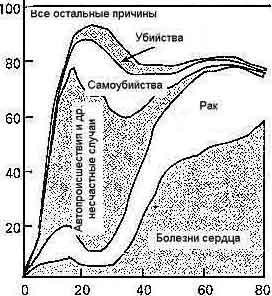
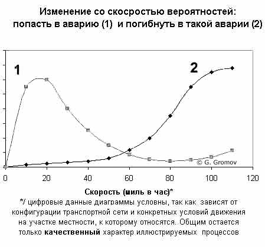
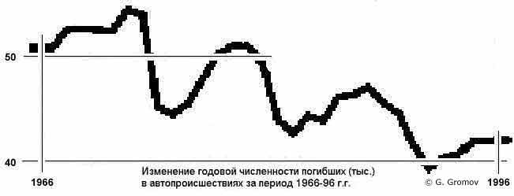
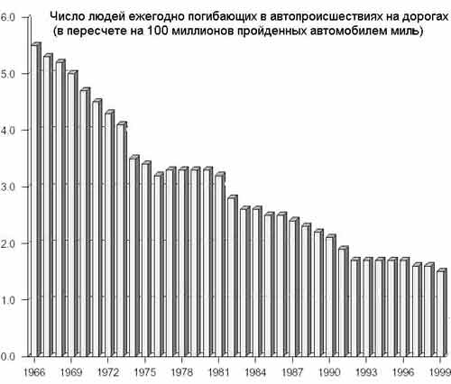
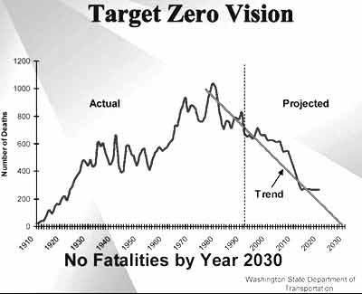
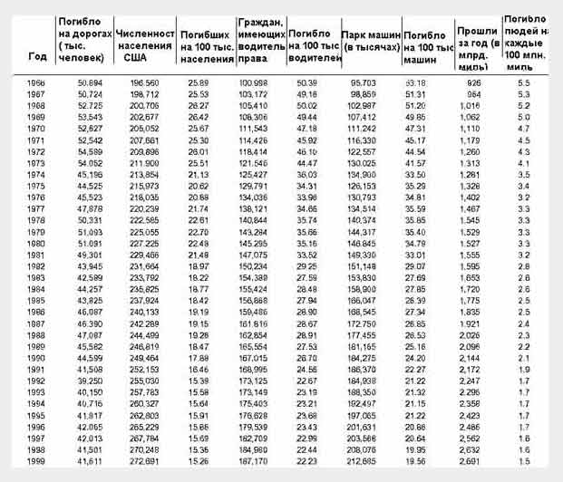

Американские автодороги: статистика фатальных автопроисшествий, сопоставительный анализ факторов их определяющих, механизмы госрегулирования норм движения и практика их приложений
Автор, проживающий в Калифорнии, анализирует наличие "серой зоны" в правоприменительной практике в отношении нарушителей скоростных ограничений на хайвеях США. Расcматриваются факторы, влияющие на безопасность движения по американским дорогам. В основном внимание уделяется тем из факторов, которые определяют общее число наиболее тяжелых авторанспортных происшествий с фатальными исходами. Сравниваются с аналогичными данными из ряда главных причин гибели людей в США, среди которых фатальные болезни, несчастные случаи и пр. Cопоставляются оценки частоты фатальных автопроисшествий по ряду стран. Материал имеет огромную практическую ценность для организаторов движения. Версия третья -- от 22 июня 2003г.
Введение: в чем суть проблемы?
Здесь - в этом "Введении" -- делается попытка по возможности кратко -- только на на цифрах и фактах -- пояснить о чем, собственно, далее в статье идет речь. А именно, ответить на естественным образом возникающий вопрос -- почему именно автопроисшествия? В чем состоит особой важности значимость обсуждаемой проблемы на фоне многих иных, столь же широко и давно известных, которые повседневно возникают в суете буден перед отдельными людьми и населением страны в целом практически любого промышленно развитого общества этих дней?
| Рис. 1.
Пять главных причин смерти в США по всем возрастным категориям  |
Таблица 1 . Относительный вес различных причин смерти от несчастных случаев в США | |||
| 1. | Автомобильные происшествия | 47% | ||
| 2. | Случайное падение (с высоты, в гололед или по иной причине) |
14% | ||
| 3. | Отравление (пищевые, фармация, бытовая химия и пр.) |
6% | ||
| 4. | Тонут в водоемах | 5% | ||
| На Рис. 1 данные приведены для мужской части населения США, однако аналогичный рисунок для женской половины населения страны носит весьма схожий по структуре характер и не вносит поэтому сколько то заметных изменений в приведенное выше общее разбиение данных фатальных потерь по возрастам. | ||||
| 5. | Гибнут на пожаре или от других причин ожогов | 5% | ||
| 6. | Случайные удары (падающими предметами, и т.п.) |
3% | ||
| 7. | Огнестрельное оружие | 2% | ||
| 8. | Отравления газом (от бытовых нагревателей -- газовые плиты, отопление, а так же выхлопными газами в гаражах, и пр.) |
1% | ||
Таблица 2. Первые 5 причин смерти в США
для молодежи (от 15 до 24 лет)
| Причина | Процент в общей сумме первых 5 причин |
Абсолютное
значение числа смертей по данной причине |
|
| 1. | Происшествия | 51.8% | 12,752 |
| 2. | Убийства | 21.3% | 5,233 |
| 3. | Самоубийства | 16.3% | 4,003 |
| 4. | Рак | 6.8% | 1,670 |
| 5. | Сердечные заболевания | 3.9% | 961 |
Комментарии к приведенным выше таблицам и рисунку:
1) как видно таблицы 1 и более детально показано на рис. 1, в критически важной для развития производительных сил cтраны возрастной категории до 30 лет основной причиной гибели людей (в возрасте их наибольшего потенциала жизненной энергии) оказываются автопроисшествия.
2) Из сопоставления позиций 1 и 7 таблицы 1, можно видимо заключить, что для граждан США доступ к вождению автомобиля оказывается - с точки зрения вероятности фатального несчастного случая -- более чем в 20 раз опаснее доступа к огнестрельному оружию. Пример США в данном случае следует видимо считать особенно показательным в том числе и по той причине, что общее число "стволов" находящегося в собственности граждан США огнестрельного оружия и общее число единиц автомобилей оказываются в этой стране достаточно близкими. Более чем 200 миллионов имеется у американцев и автомобилей, и единиц огнестрельного оружия соответственно. То есть, статистичекские выборки одновременно и достаточно велики и вполне сопоставимы для корректного сравнения по обсуждаемому критерию их риска.
Для более взвешенной оценки места США среди иных стран, имеющих сходные обсуждаемым кругом вопросов проблемы несчастных случаев, среди которых автопроисшествия занимают статистически заметное место, ниже приводятся дополнительно также таблицы, отражающие относительный вес фактора гибели людей от случайных происшествий по регионам.
| Таблица 3. Страны с наиболее высоким уровнем потерь населения от несчастных случаев |
Таблица 4. Страны с самым низким уровнем потерь населения от несчастных случаев |
|||
| Страна | Смертность от несчастных случаев на 100 тыс. жителей |
Страна | Смертность от несчастных случаев на 100 тыс. жителей |
|
| 1. Россия | 130.8 | 1. Англия | 20.5 | |
| 2. Венгрия | 74.3 | 2. Голландия | 22.0 | |
| 3. Румыния | 61.8 | 3. Австралия | 24.6 | |
| 4. Чехия | 56.7 | 4. Израиль | 27.3 | |
| 5. Cловакия | 55,2 | 5. Ирландия | 27.3 | |
| 6. Куба | 53.3 | 6. Швеция | 27.3 | |
| 7. Польша | 51.9 | 7. Япония | 29.1 | |
| 8. Финляндия | 51.8 | 8. Германия | 29.2 | |
| 9. Франция | 51.4 | 9. США | 29.3 | |
Экономический ущерб от автопроисшествий
220 млн. машин парка американского -- вместе взятые -- пробегают за год 2 700 000 млн. миль. То есть в среднем американская машина проходит за год около 13 тыс. миль (20 тыс. км).
При этом, к примеру, в 2000 году 42 тыс. человек погибли в автопроисшествиях на американских дорогах и около 4 млн. получили ранения разного уровня тяжести. Свыше 20 млн. автомобилей были заметным образом повреждены в таких происшествиях. Иными словами шансы для усредненной американской машины попасть в аварию являются весьма высокими -- близко к 1:10 в годовом исчислении.
Из всех суммарно исчисляемых фатальных потерь в США, регистрируемых на всех видах транспорта (авиация, железная дорога, водные пути, автодороги -- все виды транспорта вместе взятые) -- потери на автодорогах составляют даже и не самую большую, а подавляющую часть -- более 90 процентов.
Ежедневно гибнет на автодорогах в среднем около ста двадцати человек.
"Каждые три дня разбивается авиалайнер класса Боинг-747 ..."
Что случилось бы с авиакомпаниями,
если бы каждую неделю разбивались по два-три
Боинга? Между тем статистика
автопроисшествий на Американских
дорогах -- один человек гибнет каждые 13
минут -- дает именно такой (суммарно по
числу погибших) итог еженедельно ...
Общий суммарно ущерб, нанесенный автопроисшествиями, экономике США оценивался в 230 млрд. долл. Для сравнения, оборонный бюджет Америки -- по всем его статьям расходов суммарно -- в том же 2000 году cоставил 290 млрд. долл.
В первом приближении указанные выше потери на автомобильных дорогах могут быть структурированы по следующим основным их статьям:
Прямые потери.
- медицинские расходы -- 32,6 млрд. долл;
- материальные потери (повреждения нанесенные собственно автомобилям и др. материальным объектам в автопроисшествии) -- 59 млрд. долл.;
Косвенно исчисляемые -- дополнительно к перечисленным выше -- экономические потери
- потери от утраты обществом производительных возможностей пострадавших участников автопроисшествия (убитых и раненых) -- 89 млрд. долл.
- все остальные экономические потери от автопроисшествий
-- 58 млрд. долл.
Именно в этот последний раздел в частности включались в 2000 г. потери американской экономики на сумму 26 млрд. долл. от резкого замедление на долгие часы трафика тех участков автомагистралей, где происходило очередное автопроисшествие. Также в эту статью включаются обычно самые разные "накладные" расходы, которые по указанным выше причинам вынужденно нести общество -- юридическое обеспечение расследования автопроисшествий и ведения судебных дел по ним, содержание административного персонала узко специализированных на таких происшествиях страховых компаний и пр. такого типа неизбежно сопутствующие автопроисшествиям непроизводительные расходы.
Видимо, представляется существенным также отметить более общий характер отдельных категорий перечисленных выше потерь -- не только на годовом интервале которые исчисляются. Серьезное -- связанное с опасностью для жизни -- ранение стоит затем на протяжении жизни пострадавшего около одного миллиона долларов. В основном эту сумму образуют медицинские расходы и утрата ранее имевшего места уровня производительности труда пострадавшим в таком происшествии. В миллион долларов в среднем потерь экономических обходится стране и каждый погибший (имеется в виду суммарно от того потери обществу исчисляемые за весь его -- прерванный автопроисшествием -- "жизненный цикл" статистически исчисляемой длительности).
Что такое автомобильная авария? Не любое автопроисшествие автоматически включается в обсуждаемую статистику. Обязательной регистрации в полиции, не зависимо от штата, где случилось автопроисшествие, подлежат все такого рода случаи, где имеют место ранения или гибель хотя бы одного из участников. В остальных случаях -- когда никто не был ранен - нормы для суммарно тяжести нанесенного материального ущерба, после которого регистрация события в качестве автопроисшествия обязательна, различаются для штатов. К примеру, в шт. Висконсин регистрации подлежат события, которые имели своим результатом ущерб частному автотранспорту на сумму свыше 1000 долларов или государственному -- от 200 долларов. В Калифорнии -- указанный порог потерь для обязательной регистрации составляет 750 долларов, и т.д. -- у каждого штата свой резон и собственная норма.
Иными словами, если в результате допустим наезда грузовика на стоящий где-то на перекрестке одной из улиц Сан-Франциско у светофора легковой автомобиль последнему был поврежден бампер и мастерская оценила стоимость его замены в 500 долларов, то такое автопроисшествие не попадет в полицейскую статистику автопроисшествий, при чем не будет туда включена на вполне законных -- выше отмеченных -- основаниях. Однако следует особо отметить, что в заметной доле всех случаев автопроисшествий водители пытаются избежать регистрации события в полиции даже и в случае заметно более тяжелых повреждений автомобиля и даже ранения одного из участников происшествия.
Как ниже будет показано, регистрация в водительское "личное дело" почти любого автопроисшествия весьма часто означаете крайне нежелательные для такого водителя прямые финансовые, как впрочем и многие и иные "осложнения". Не приходится, видимо, потому и удивляться, что в
половине от общего числа автопроисшествий, в которых автомобилям участников был нанесен заметный материальный ущерб и около
четверти случаев ранений на автотранспорте остается в Америке
незарегистрированным в полиции а их общий вклад с суммарную статистику такого рода экономических и иных потерь исчисляется косвенными средствами (статобработка данных медицинских учреждений, авторемонтных, и пр.).
Эффективность использования дороги: экономика vs. безопасность?
Известно, что общественного транспорта -- во всяком случае, в европейском понимании этого слова -- в Америке нет. То есть он конечно же есть в некоторых больших городах: в Сан-Франциско, Нью-Йорке, ... -- некоторых других, но в стране в целом его практически нет. Менее известно видимо иное -- нет ничего более грустного в городском пейзаже американского захолустья , чем вид человека, одиноко сидящего на скамейке под вывеской: "Остановка автобуса ...". Это предпоследняя потому что здесь социально грань -- далее (после "безлошадных") идут только бездомные.
9 из каждых 10 американцев, находящихся в возрасте, когда можно получить права на вождение автомобиля, имеют эти права.
Для основной массы американцев -- экономически наиболее продуктивного возраста -- время, проводимое ими в автомобиле, вполне сопоставимым оказывается со временем, которое они проводят в своем доме. Отсюда и то -- неизвестное видимо где-то еще в мире -- влияние, которое оказывают американские дороги, на решительно все грани человеческого бытия рядового американца. Америка всегда была на колесах практически вся. Однако, после того как она пересела с лошадиной повозки на автомобиль, строительство и эксплуатация автомагистралей стали одной из наиболее развитых форм "государственного бизнеса". Со всеми его светлыми и темными гранями...
Американские дороги, как социальный индикатор
Движение на американских автомагистралях -- это и самый чуткий, видимо, из всех известных показателей экономического состояния региона. Когда, к примеру, рассосались всеми до того нещадно проклинаемые пробки на участке 101-го шоссе между Сан-Франциско и Сан-Хосе, то никто этому не радовался. Даже
наоборот. Грустной стала эта дорога, по которой теперь даже в часы пик иной раз можно с ветерком прокатиться.
"Депрессия в Кремниевой Долине" -- так этот дорожный пейзаж потому что теперь называется. Дорога дает об том много более убедительные -- и главное наглядные -- свидетельства, чем все сводки дневных котировок акций местных хай-тек кампаний вместе взятых и уж тем более квартальные сводки текущих цифр уровня безработицы в Долине.
Строительство и ремонт дорог -- главное в глазах американца доказательство, что не все деньги, которые изымает у него налогами правительство расходуются так уж и совсем в пустую. Поэтому гордый лозунг: "Your Tax at Work" (Ваши Налоги Работают) -- центральное украшение почти любого временно закрытого для движения участка ремонтируемого шоссе.
Как готовят водителя
Автошколы -- пусть и по разным поводам -- посещают в Америке люди в возрасте от 15 до 92 (иногда и старше) лет. Подросткам 15--18 лет это требуется по закону, чтобы получить временные (от 16 до 18 лет которые дают право на вождение -- с большим числом ограничений) права на вождение автомобиля и таким образом возможность самим начать выбирать наиболее в городе интересные им спортивные секции, иные внеклассные мероприятия, ходить в гости к приятелям, помогать родителям по хозяйству и пр., не говоря уже об огромном с того возникающем послаблении для родителей от долгожданной возможности вычеркнуть из своего напряженно дневного графика раздел -- "отвезти и забрать ребенка из школы". Глубоко пожилым людям такие "ограниченные права" предоставляют возможность вновь попытаться самим без помощи родственников или опекунов водить автомобиль, хотя бы в пределах нескольких кварталов от своего дома: визит к врачу, в продуктовый магазин, в аптеку...
Отметим еще раз, что для людей в полностью дееспособном возрасте -- тем, кто уже старше 18 но и еще однако моложе 80 лет -- и при нормальном сравнительно общем их физическом состоянии никаких автошкол для получения самого массового типа водительских прав и вообще не требуется. Ответить на вопросы ( простейшего выбора наиболее подходящего по ситуации из нескольких альтернативных ответов) теста письменного -- проставить то есть требуется на бланке предложенном галочки в подходящих к тому по смыслу местах -- и сдать несложный экзамен на вождение.
Абсолютное большинство населения Америки проходит эти испытания с первого захода без каких-либо трудностей. Но если они почему-либо возникли, то можно и почти сразу идти пересдавать. Посещение автошколы, как обязательный этап к сдаче на водительские права, начали требовать власти лишь у двух отмеченных выше симметрично крайних возрастных групп, в попытке решить хоть отчасти таким образом проблему их повышенной опасности на дороге. Те, кто: старше 80
-- это самая опасная возрастная группа на американских дорогах. Подростки -- старше 15 но еще моложе 19 которые
-- являются второй по степени их опасности на автодорогах группой водителей. Попыткам хоть как-то снизить обучением в "Школе вождения" у специально подготовленных инструкторов риск для водителей указанных двух групп и продиктованы требования обязательности им такого обучения.
Юридический статус водителя в Америке:
допуск к рулю (drive license) -- право или привилегия?
В том числе и по причине особо отмеченной выше -- во Введении, см. Таблица 1 -- убедительной разницы -- в 20 раз напомним опаснее автомобиль оказывается чем огнестрельное оружие, с точки зрения вероятности фатального несчастного случая -- американские власти неустанно напоминают своим согражданам, что получение водительских прав не есть всеобщее конституционно для них право, (как скажем записанное в первой поправке к Конституции право на владение оружием), а всего лишь совершенно частных обстоятельств индивидуально выдаваемая гражданину привилегия.
Рассматриваемые в качестве таковой именно что "привилегии" водительские права в Америке вручаются или изымаются, согласно усмотрению административно взирающих за дорогами властей по существу в бесспорном порядке.
На ясном осознании этого факта американским обществом в целом видимо и, кроме прочего, и основана внешне трудно объяснимая наблюдателю со стороны толерантность американцев, столь ревнивых обычно к любому -- пусть даже и кажущемуся -- в том или ином частном случае произволу властей, к практически полному бесконтрольно произволу дорожных патрулей. Офицер дорожной полиции (к примеру, в Калифорнии их называют "си-эйч-пи офисер", где "СHP" означает -- Сalifornia Highway Patrol ) может остановить на дороге любого водителя в любом месте по любому поводу и -- в широком смысле -- решить его водительскую судьбу тут же на месте в случае даже самого на первый взгляд незначительного нарушения.
В качестве типового примера, разъясняющего врожденно уповающим на силу своего адвоката гражданам США особый характер их статуса в качестве водителя автомобиля даже и специальный вопрос, к примеру, присутствует в тесте на получение водительских прав для инструктора автошколы (отдельный тип тестов существует для разных рангов профессиональных и иных прав вождения):
Ситуация: полицейский патруль остановил водителя на шоссе и просит его пройти в автофургон для экспертизы на алкоголь
Вопрос: может ли этот водитель вызвать, скажем, по телефону своего адвоката и воздержаться до его прибытия от участия в предлагаемой ему экспертизе?
При подготовке к сдаче такого рода и иных гос-экзаменов студентам постоянно вдалбливают, что после того, как они повернут ключ зажигания в своей машине, их гражданские права серьезно и многосторонне сужаются. Не желаете если почему поступиться в такой серьезной степени своими дарованными конституцией правами -- воля ваша. Вы живете в свободной стране и никто вас насильно за руль автомобиля не усаживает. Воздержитесь в таком случае от управления автомобилем и продолжайте наслаждаться своими никем и ничем не ущемленными гражданскими правами. Однако, если вы все-таки решили обходиться без услуг такси или частного шофера, то настройтесь тогда пожалуйста на строгое исполнение всех правил, инструкций и устных требований, сообщаемых вам властями, ответственными за безопасность движения на дорогах США.
Длинные же очереди в суд -- ежедневно и в любом городишке по всей Америке - в том числе и страждущих найти справедливость по дорожным спорам с офицером дорожной полиции только дополнительная тому бывает убедительно иллюстрация. Все потому что дискуссии с судьей и выносимые затем решения в основном носят опять же лишь воспитательный по отношению к водителю характер и - за редчайшими исключениями -- не корректируют решение сколько то заметно суть, принятого полицейским на месте решения.
Общий смысл практически любого отдельно взятого решения любого судьи по дорожным спорам оказывается всегда предельно ясным - государство снизошло и выдало автомобилисту ПРИВИЛЕГИЮ пользоваться очень опасным средством передвижения. В любой момент целесообразно бывает в интересах общества отдельно взятого автомобилиста этой ПРИВИЛЕГИИ лишить, если к тому компетентный представитель власти полагает, что такая мера будет в интересах безопасности остальных участников движения.
Разумеется соблюдается весь общепринятые антураж нормального судебного заседания. Присутствует, если того пожелает истец, также и офицер дорожной полиции и адвоката можно пригласить - все как положено по протоколу -- вот только решение как правило известно заранее.
Полицейский офицер всегда -- в этой области юридических процедур -- прав. Это ясно судье до начала слушания -- в отличии от любых иных дел в суде. Задача судьи "traffic court" лишь смотреть, чтобы не было моментов злоупотреблений, личных мотивов и пр. Во всех иных случаях офицер дорожного патруля прав ... по определению, а свою функцию в процессе судья видит в том чтобы дополнительно разъяснить это обстоятельство каждому из автомобилистов.
Еще раз -- в подавляющем большинстве случаев в судах о дорожных нарушениях (traffic court) судья не ищет истину, и даже не пытается установить степень соответствия вины автомобилиста тяжести наложенного на него офицером патруля наказания. Основной своей задачей судья считает пояснение автомобилисту реальной ситуации с его лично обязанностями на дороге и теми жесткими условиями, на которых государство готово еще будет сохранять за этим проштрафимся автомобилистом ранее выданную ему ПРИВИЛЕГИЮ на управление автомобилем.
У хорошего судьи все заявители "осознают" в конце концов, как он к ним оказался снисходителен -- "снизил чуть не вдвое штраф, "... но ведь мог бы и прав лишить (тогда прощай работа, личная жизнь -- все кувырком), а то и в кутузку упрятать ...". Артистизм и психологически верно избранный в таком особого рода "суде" к каждому из участников тон по сути только и характеризует успех работы судьи. По тем наблюдениям в traffic courts, которые довелось посетить в самых разных районах Северной Калифорнии, абсолютное большинство судей этим критериям эффективности их работы ярко убедительно соответствуют. Как правило это оказывается захватывающе волнующий в своей эмоциональной достоверности театр одного актера с огромным числом поочередно участвующих в действе зрителей.
Эффективность использования дороги
Совершенство работы автотранспортных магистралей в Америке прямо пересчитывается властями и населением в эффективность хозяйственного механизма страны в целом -- на всех его уровнях. Соответственно и огромные средства регулярно тратятся на исследования и разработку все более сложных норм, регулирующих поведение людей и машин на дороге.
К примеру последний из сколько то внимательно изучавшихся мною (ежегодного пересматриваемых) кодексов таких норм для штата Калифорния -- 2002 Vehicle Code -- представлял собой книгу формата чуть менее писчего листа и объемом где-то в полторы тысячи страниц убористого текста. Но это только нормы, как таковые. Почти каждая из них, как правило, обрастает далеко не тривиальными логически правилами их практических приложений, допустимых -- в какую сторону и насколько -- отклонений (к примеру, ниже обсуждаемая "серая зона" предела скорости), шкалы тяжести нарушения и т.д.
Поэтому заметную часть общей нагрузки на судебные инстанции нижнего (местного) уровня составляет -- выше это уже отмечалось -- ежедневно длиннющая по утру очередь в "автодорожный суд" (traffic court) страждущих:
- доказать свою правоту в споре с офицером дорожного патруля о характере или тяжести зафиксированного нарушения -- это сравнительно небольшая группа людей в той очереди;
- убедить судью в искренности своего раскаяния относительно совершенного на дороге нарушения или сообщить ему про смягчающие вину обстоятельства -- это цель явки в такой суд основной массы его посетителей.
При чем почти никто -- за редкими исключениями особой тяжести совершенного нарушения -- в той очереди к судье не обязан в ней находиться. Оплатить штраф можно по почте, в электронной форме и т.д. Очередь однако составляют те для кого это оказывается "добровольная явка" на душеспасительную беседу в надежде смягчить наказание. И как правило судья это понимает. Сам факт явки к нему набеседу как правило уже заведомо означает в среднем наполовину снимаемый штраф.
Основная цель разрешаемых средствами такого суда в социальной системе динамических противоречий -- это в основном оказывается постоянный поиск оптимального соотношения скорости движения (прямо пересчитываемой в пропускную способность магистралей) и связанной с ростом скорости тяжести потерь здоровья -- а нередко увы и жизни -- для участников движения.
"Убивает скорость?" - как работает на дороге фактор скорости:
число аварий vs. число погибших
C очевидностью заметно большая часть аварий происходит на малой и даже можно сказать, что самой малой скорости, тогда как власти и все, кто так или иначе всерьез озабочен безопасностью людей на дороге (страховые компании, к примеру, для которых почти любая потеря здоровья или гибель в автопроисшествии застрахованного водителя означает с высокой вероятностью необходимость выплаты ему заметных сумм) продолжают настаивать -- убивает скорость!
Между тем -- им постоянно возражают -- вот данные статистики:
- 60 процентов от общего числа автопроисшествий случаются на относительно малой скорости -- ниже 30 миль в час.
- 65 процентов всех аварий происходят и вообще только в пределах перекрестков.
В чем смысл -- точнее говоря статистическая суть -- много лет шумно обсуждаемого по любому очередному к тому поводу противоречия?
Суть в существенно разных категориях риска, которые потом нередко смешиваются в итоговое "общее число аварий". То есть в очередной раз имеем и увы здесь тоже устойчивую весьма в народе тягу при любой к тому возможности измерять "среднюю температуру по больнице". Иными словами, следует в данном случае различать в сложном клубке причин и результатов, дающих в совокупности общий фон дорожно-транспортных происшествий, по крайней мере две основные группы:
- основная по общему числу масса дорожных инцидентов, которые происходят на малой скорости и дают статистически устойчивую во времени загрузку десяткам тысяч автомастерских.
- сравнительно небольшое в той общей массе число наиболее тяжелых автопроисшествий, которые случаются уже на заметно более высокой скорости и соответственно в значительно большем проценте случаев приводят к необходимости вызывать скорую-, а не тех -помощь.
Частота и относительная тяжесть автопроисшествий по шкале скорости
Общий качественно характер изменения (в функции скорости движения автомобиля) риска попасть в аварию как таковую вообще -- с одной стороны, а с другой -- погибнуть в такой аварии, показан ниже на раздельно поясняющей итоговое взаимодействие указанных двух факторов риска диаграмме -- Рис.2.

Поясним основные фазы скоростного режима автотранспортных средств на дорогах Америки c помощью двух -- показанных на расположенном выше
Рис.2 -- графиков:
- скорость/ вероятность попасть в аварию;
- скорость/ вероятность погибнуть в аварии.
Отметим сначала, что обе показанные на рисунке функции вполне можно считать что определены в окрестности нулевой скорости. Это обстоятельство отражает общеизвестный по сути факт, что машина оказывается опасной с момента .... поворота ключа зажигания. Не требуется никакого периода разгона для набора опасной скорости. Первым же неловким дерганьем с места -- даже еще на стоянке -- машина может нанести тяжелый, а иногда и непоправимый, ущерб окружающим ее машинам, или людям. Примеров такого рода несчастных случаев -- автотранспортных происшествий с околонулевой скоростью -- более чем достаточно оказывается опять же каждый год и в самых разных местах.
После того, как машина благополучно начала движение и далее на участке скоростного режима от 0 до 15--25 миль в час, то есть когда водитель только еще начинает начинает вписываться к примеру в городской маршрут своего движения, вероятность попасть в аварию быстро растет со скоростью. Объяснений такому обстоятельству существует множество. Упомянем по крайней мере некоторые из них.
Движение на небольшой скорости, как правило, происходит в условиях стесненного потока близко идущих машин, пешеходов, велосипедистов, грузовых или курьерских мотороллеров и т.д. Соответственно и велика вероятность вынужденно резких маневров торможений и пр. Начинается процесс преодоления водителем разного рода регулируемых и иных перекрестков, слияния полос и пр. поводов совершить ошибку маневра, которая с определенным характером движения и уровнем квалификации водителя вероятностью ведет к автопроисшествию.
Тяжесть такой ошибки, совершенной в описываемых условиях, начинает здесь быстро зависеть от скорости. В самом деле -- в зависимости от скорости движения разная глубина вмятины остается на крыле рядом идущей машины при неудачном ее "подрезании", разная степень повреждения бампера при наезде на резко затормозившую машину спереди -- и т.д. Все это оказывается заметным образом связано со скоростью движения. Отсюда и чем выше скорость, тем больше шансов что цена повреждения выйдет за порог, позволяющей еще это происшествие не регистрировать в полиции.
Впрочем и иных оказывается предостаточно причин, по которым рост скорости движения на его начальном участке -- до 25 миль в час на приведенном выше рисунке -- связан оказывается с ростом числа регистрируемых аварий. В основном, тем ни менее следует особо отметить, это относиться к городскому циклу движения: в условиях оживленных перекрестков, обилия пешеходных переходов типа "зебра", знаков "стоп" и пр. Разумеется ничего такого нет на скоростном шоссе, но ведь никто -- с другой стороны -- и не ездит с такой скоростью на автомагистралях. Кроме всего прочего, там ведь и не паркуются. Иными словами, даже чтобы только попасть на автомагистраль -- в начале почти любого маршрута -- водитель вынужденно проходит этот самый суетной начальный участок -- до 25 миль в час. Именно он -- этот интервал скоростей -- как отмечалось, и дает наибольшее число аварий.
В то же время вероятность погибнуть в каком-либо из таких автопроисшествий, происходящих на скорости до 25--35 миль в час, остается весьма небольшой. В этом скоростном режиме потому что еще вполне надежно в большинстве случаев предохраняют людей стандартные -- встроенные изготовителем машины -- средства, обеспечивающие безопасность людей в автомобиле при разного рода коллизиях. Хотя и полностью исключить возможность фатального исхода того или иного уличного автопроисшествия тоже нельзя: грубая ошибка одного из водителей и кто-то ударяет в на перекрестке более тяжелым автомобилем в боковую дверцу легкой машины. Водитель или пассажир при том могут получить тяжкие повреждения с непредсказуемым исходом.
Другие ситуации иногда возникают при авариях на малой сравнительно скорости, когда оказывается что встроенные средства защиты водителя и пассажиров не обязательно во всех случаях в должной мере помогают. Наконец, можно напомнить, что почти в половине такого рода инцидентов к примеру те же ремни безопасности оказывается что пассажир или сам водитель не использовали. И тем ни менее, вероятность погибнуть в аварии на такой малой скорости будет соответственно и заметно меньше, чем в случае, когда скорость движения автомобиля уже и сама по себе гарантирует, что те же ремни безопасности, к примеру, воздушные мешки и пр. средства уже увы не помогут.
Как видно из рисунка для графика (2), на участке малых скоростей движения вероятность погибнуть в аварии хотя и существует, но остается относительно небольшой и следует обратить внимание что почти не растет до определенного порога скорости. Это как выше уже отмечалось связано в первую очередь с тем, что на этом интервале скоростей противоударные средства защиты кузова машины и надлежащие аксессуары внутри салона (воздушные мешки, ремни безопасности и пр.) относительно надежно выполняют свои функции. После того как с выездом на скоростную магистраль автомобиль проходит барьер безопасности в 55 миль в час, то большая часть вышеперечисленных средств защиты перестает выполнять свои функции. Однако и сама по себе вероятность попасть в аварию -- см. график (1) -- тоже резко падает с набором скорости выше 25--35 миль в час.
Почему вероятность автопроисшествий быстро так падает на участке скоростей после 20--30 миль в час? Переход в более высокий диапазон скоростей движения -- от 25 миль в час и выше - на приведенном выше рисунке как правило означает, что машина попадает в не столь скученные условия движения, дороги с много более редкими перекрестками и т.п. В ином то случае ведь не разгонишься. То есть, сдвиг усредненного параметра скорости на диаграмме всего лишь отражает изменение характера дороги, по которой следует автомобиль. Выезд на дорогу состоялся, где можно двигаться быстрее. И чем свободнее такая дорога, тем быстрее движение по ней - во всяком случае на участке скоростей 25--55 миль в час то уж заведомо. Но именно это -- меньше иных участников движения в опасной близости от автомобиля -- и означает, кроме прочего, снижение вероятности задеть иные машины или пешехода. В то же время, как то уже выше отмечалось, на этом участке диапазона скоростей еще остаются эффективными защитные средства в автомобиле, предназначенные для спасения жизни водителя и пассажиров в случае, если автопроисшествие все же произойдет.
Иными словами, именно на этом интервале скоростей -- как то видно по диаграмме -- вполне возможно возникновение ситуаций, когда вероятность погибнуть в автокатастрофе может снижаться от увеличения скорости движения. Но эта эпизодически с набором скорости движения -- выходом из города на шоссе -- складывающаяся ситуация никак, тем ни менее, не может служить поводом для оспаривания общего тезиса -- убивает скорость! Такого рода "бугорков" и "провалов" на любой статистических измерений функции может быть по разным причинам появляться и нивелироваться множество и они никак не должны затенять ведущей тенденции для процесса в целом. Суть же этой тенденции в данном случае заключается в том, что на относительно малых скоростях городского цикла движения преобладают и относительно малых масштабов их тяжести последствий автопроисшествия, однако в заметно большем в сравнении со скоростными шоссе общем их числе. Тогда как на скоростном шоссе в условиях его регулярного режима движения наоборот -- автопроисшествия случаются много реже, но их последствия по причине более высокой скорости оказываются много более тяжелыми для участников таких происшествий. Последнее обстоятельство особенно важно для правильного понимания обсуждаемых процессов. Поясним его поэтому чуть подробнее.
В целом для общества, экономическая тяжесть автопроисшествий возникающих на малой скорости городского цикла движения оказывается заметно дороже по прямым с того экономическим последствиям: много больше побитых машин, больше раненых, каждый из которых в среднем стоит обществу столько же как убитый на жизненном цикле с того экономических потерь (см. об этом в первом разделе -- "Экономические потери ..."). Плюс к тому и собственно погибших то в том цикле малой скорости городских улиц движения оказывается почти столько же, как на скоростных шоссе. По годам это соотношение бывает несколько меняется в ту или иную сторону ( к примеру, в 1999 году 23,559 человек погибли на скорости выше 55 mph и 17,786 -- ниже этого порога), но в первом приближении принято считать что поровну приблизительно народу погибает по обе стороны от рубежа скорости в 55 миль в час. Приведенная выше диаграмма видимо иллюстрирует это обстоятельство достаточно понятным образом. Большое число событий -- автопроисшествий -- с относительно малой вероятностью погибнуть в каждом из них, тем ни менее в статистической их сумме дают приблизительно такую величину, как и много более редкие возможности попасть в аварию на большой скорости, но уже с весьма высокой зато вероятностью погибнуть в такой аварии. То есть общая вероятность погибнуть в автопроисшествии для ситуаций отражаемых левой частью диаграммы обсуждаемой оказывается близкой к той, которая отражена в ее правой части.
Так вот существенно отметить, что с этой точки наших рассуждений интересы отдельного гражданина и общества в целом далее уже не совпадают. Опасность для него погибнуть от превышения скорости на шоссе оказывается несравнимо большей, чем в одной из много более частых городских авариях на малой скорости. Хотя для государства в целом насчитаны будут одинаковое число погибших на дорогах в и слева от точки пересечения приведенных выше графиков и справа от нее. Логика здесь приблизительно та же, что и ниже по данному тексту отмеченная в разделе, где поясняется, почему ночью по шоссе ездить много опаснее, чем днем. В том нижеследующем обсуждении тоже -- sic! -- имеется аналогичного рода кажущееся противоречие, а именно -- одинаковое в сумме общей число людей погибают на дорогах ночью и днем. Что не помешает тем ни менее видимо пониманию того факта, что для каждого отдельно взятого водителя ночная дорога окажется многократно -- в разы -- опаснее. Если сохраняются все еще по данному пункту трудности в интерпретации диаграммы , то и лучше было бы тогда вернуться к ней после чтения того нижележащего раздела про "ночное шоссе".
Кратко по крайне правой части диаграммы. После заметно быстрого увеличения вероятности погибнуть с ростом скорости в автопроисшествии на интервале скоростей 65--95 миль в час, затем наступает снижение прироста такой вероятности на единицу увеличения скорости и кривая (2) переходит в асимптотическую фазу. Физическая интерпретация этого обстоятельства видимо понятна. На скоростях аварий около 100 миль в час (160 км в час) шансов сохранить жизнь водителю или пассажирам такой машины остается слишком мало и потому дальнейшее повышение скорости движения почти ничего уже в этом смысле не меняет.
Однако как то видно их характера графика (1) на этом верхнем участке скоростей начинает увеличиваться вероятность самой по себе аварии. Причина тоже видимо не вызывает большого числа вопросов -- на таких скоростях уже далеко не все машины ведут себя достаточно устойчиво. Заметное число машин -- к примеру, более ранних годов выпуска, не самого совершенного уровня их обслуживания и т.д. -- могут начать опасно реагировать на неизбежные при таких скоростях перегрузки отдельных элементов их ходовой части.
То есть далеко не факт, что любая из вполне исправных даже машин типового потока движения на магистрали (который в норме идет -- напомним -- в коридоре скоростей 63--78 миль в час) сохранит столь же надежный режим управления ею и на на заметно более высокой скорости. Совокупность результатов указанного рода причин и отражает крайне правая часть графика (1).
Примечание:
- Как показывает лекционная по данной теме практика, именно -- а в значительной степени и только -- анализ той "ночной" ситуации на дороге позволяет заметно лучше понять слушателям суть отмеченного выше кажущегося противоречия при чтении графиков приведенной выше диаграммы.
- Всякий раз по ходу изложения подробно останавливаюсь на такого рода статистических ловушках и кажущихся противоречиях именно потому, что собственно из них только и проистекают большая часть предубеждений в понимании казалось бы очевидных тезисов, которые должны быть положены в систему обеспечения безопасности движения на автодорогах.
Итак, еще раз -- убивает скорость! Ну и что? И чего с этого общего вывода уже практически власти в США могли бы сделать? Да, ровным счетом выясняется что ничего. Во всяком случае все известные попытки волевых решений, спускаемых "с верху", еще ни разу и ничего не давали. Снизить директивно скорость движения на шоссе по стране в целом невозможно.
Если, к примеру, кто-то решил бы волевым актом местных властей развесить вдоль шоссе более низкого номинала знаки ограничения скорости и даже мобилизовать под их неукоснительно теперь соблюдение "специализированную бригаду" новичков-полицейских, то все равно ничего не получится. Это оказывается невозможным по чисто экономическим соображениям. Автомагистрали вокруг такого шоссе почти все немедленно закупориваются и наступает экономический коллапс такого региона. Никто из властей и никогда понятно на такое не пойдет, а ни один из опытных полицейских именно потому для такой гипотетической акции и не годился бы. Не станет никакой здравомыслящий офицер дорожной полиции тромбировать автомагистраль.
Поэтому то, не смотря на столь очевидного смысла на этот счет много лет устойчивый данные статистики:
- на скорости до 55 миль в час пристегнутый ремнями безопасности водитель редко погибает.
- автопроисшествия с фатальными исходами заметным образом становятся все более вероятными в случаях автопроисшествий от скоростей движения уровня 50 миль в час (около 80 км в час).
вопрос о соблюдении установленных знаком ограничения скорости режимов движения основного потока машин на автомагистрали остается крайне сложным.
Еще раз -- знак в Америке (как и везде в мире) предполагалось исходно что указывает потолок допустимой скорости. Между тем практика применения дорожного законодательства все более решительно вносит в эти благие намерения свои жестокие, увы, по их финальной сути коррективы. Сначала появились так называемые "серые зоны" допустимого превышения установленного предела скорости. Это молчаливо участниками движения и полицией соблюдаемые -- формально нигде не оговоренные -- нормы допустимого превышения скорости (обычно в пределах 15--20 mph над предельной скоростью) указанной знаком. Так возникла та самая, парадоксальная на внешний взгляд, ситуация когда в час пик весь поток идет по автомагистрали на скорости 70 mph под знаком 55 mph. Такого рода ситуация стала в Америке будничной реальностью. Но и этим дело не ограничивается.
Снижение скорости:
- чем меньше скорость, тем больше общее число автопроисшествий.
- подавляющая часть автопроисшествий, случающихся на малой скорости, хотя и имеют малозначительные как правило для их участников последствия (помят бампер, поцарапана внешняя поверхность дверцы или крыла автомобиля, и т.п. ), однако весьма заметно снижают пропускную способность дорог. Снижение скорости потому с некоторого порога ведет к полной закупорке дороги.
Рост скорости:
- с ростом скорости снижается общее число автопроисшествий и заметно увеличивается, в том числе и по этой причине, пропускная способность дорог.
- увеличение скорости движения на автомагистрали ведет с росту тяжести последствий каждой аварии для участников автопроисшествия. Все более заметно увеличивается в этих условиях доля аварий с наиболее тяжкими последствиями: необратимый выход из строя поврежденных в такой аварии узлов и агрегатов машины, тяжелые ранения водителя и пассажиров, гибель одного или нескольких участников автопроисшествия.
Выводы:
- Порог снижения скорости движения на автомагистрали определяет рост опасности полной остановки потока транспортных средств из-за быстрого увеличения общего числа автопроисшествий при движении машин на низкой скорости. Снижение скорости закупоривает магистраль мелкими авариями.
- Верхний порог средней скорости движения по автомагистрали задает встречно быстрый рост числа фатальных исходов в авариях, которые случаются на большой скорости. Убивает скорость!
Что делать?
Поиск практически достижимого -- в условиях реально сложившихся для данной местности масштабов развития и качества автомагистралей --
оптимума для скорости потока машин на дороге и есть та задача местных властей, которую они повседневно решают силами полиции и автотранспортных судов -- с одной стороны, и местного уровня законодателей, формулирующих текущие изменения норм движения на дорогах -- с другой.
"Неписанный кодекс" взаимоотношений водителя и представителя власти на магистрали
Понятно, что ситуация, когда с молчаливого "невмешательства" автоинспекторов установленную законом предельную скорость нарушают на дороге все участники движения, порождает заметные возможности для произвола представителей власти. Случаи, когда из всего потока машин вдруг кого-то останавливают и вручают штраф за превышение скорости, невзирая на его беспомощные в данной ситуации протесты о том, что водитель этот всего лишь шел со скоростью общего потока движения, бывают. Но во-первых это большая редкость, а во-вторых -- как правило, для такого "произвола полиции" требуется внешний к тому импульс внимания к машине. А именно, автомобиль кажется похожим на разыскиваемый по ориентировке из числа угнанных или принадлежащих подозреваемому в преступлении и т.д. В то же время остановить и, проверив, отпустить -- значит тоже нарушить некие "правила игры". Потому и избирается часто формальный повод для задержания -- speeding (умеренное превышение скорости, которое является самым массовым и наименее наказуемым по шкале штрафов проступком) -- с его же формальным фиксированием. Такой подход позволяет полиции относительно просто решать их текущие задачи, не слишком дергая тем "общественность". Ситуация такого рода не для кого не секрет давно уже и видимо всех в целом устраивает.
Осторожно, школа!
Запомнился эпизод, когда сдавал -- лет 10 тому назад -- тест на вождение при получении водительских прав местных. Проезжаем по улице городка мимо школы.
Издали вижу знак, о том указывающий, и как положено -- как то изучал еще в СССР, когда на права сдавал -- снижаю скорость до установленного к тому знаком предела
25 mph. Вижу проверяющий меня инструктор ставит себе в ведомость галочку -- ошибку стало быть совершил водитель. Поясняет -- снижать скорость надо
только, если кого-то из детей у школы той увидел. В ином случае -- если школьный двор
пуст оказался -- продолжай движение на пределе допустимой в городе --
40 mph (65 км в час) скорости. И добавил в пояснение: слишком много машин на дорогах Калифорнии ...
Понятно, что определенного рода гибкость в применении закона полиции просто необходима для надлежащего исполнения ее уставных функций. Потому никого и не удивляет, когда газеты сообщают, что подозреваемый в каком-то очередном шумном известном преступлении был наконец-то задержан "за нарушение правил дорожного движения" и посажен за ЭТО (за мнимое, как все понимают, "нарушение правил") под арест. Допустимое законом время содержания за такое нарушение под стражей как раз и позволит полиции согласовать с прокуратурой все основные процедурные моменты для официального предъявления задержанному обвинения в совершении им того реального преступления, коие и было причиной его задержания.
Необходимо отметить, что слишком уж большого внимания к произволу отмеченного выше рода, который могут себе позволить в рамках гибкого применения норм движения на автомагистралях офицеры дорожной полиции за редчайшим исключением в стране не наблюдается. Более того, уважение, а подчас и демонстративное даже, к офицеру полиции -- общепринято. Любые от того -- почти по любому поводу -- отклонения становятся едва ли и не хрестоматийными примерами из серии -- как не надо себя вести законопослушным гражданам. Ниже -- в разделе, где обсуждаются некоторые разделы шкалы наказаний для нарушителей ... -- приведен пример такого рода.
А вот чего настойчиво -- и при всех решительно обстоятельствах -- рекомендуется избегать водителю на американской дороге -- это, так называемый, reckless driving.
Reckless driving -- тяжелое нарушение правил, которое если еще и не повело за собой жертвы, но могло быть с высокой вероятностью ими чревато. Очень резиновая формулировка, которая кроме того и по разному в разных штатах толкуется. Туда может быть отнесено, кроме очевидно к ним относящихся (скажем выезд на полосу встречного движения для обгона на двухполосном шоссе и т.п.) так же и менее очевидные: перестраивание без заметной паузы сразу на несколько рядов многополосной магистрали движения; и даже ... медленная езда.
"Медленная езда" или ... еще раз к вопросу об уважении к представителю закона
Последнему -- из вышеописанных -- случаю наблюдал иллюстрацию ярко убедительную из документального видео про работу дорожной полиции. Остановили парня на роскошной машине открытой. Чего-то там нарушил. Мелкое нарушение, выписывают ему "тикет", а он видимым образом ... обижается. Это завязка истории.
Далее кино это учебное для инструкторов вождения уже поэтапно демонстрирует суть того "Дела" -- выписывают парню штраф за мелкое нарушение и соответственно же самое кажется мелкое из возможных за то по шкале штрафов наказание ему предстоит. Раскланяйся, насколько это возможно в салоне автомобиля, и езжай себе с миром. То наказание не будет регистрироваться в водительское Дело (которое сидит в компьютере общеамериканском), если водитель всего лишь заплатит этот маленький штраф и посетит лекции однодневной "школы дорожного движения" -- traffic school.
Иными словами в завязке истории самая типовая ситуация и самая массовая же на американской дороге. Ее особенность -- и соответственно же причина, почему этот опять же обычный для любой полицейской машины видеоролик попал в учебное кино -- только в том, что за ней далее последовало.
Парень видимо был так уверен, что его незаслуженно остановили эти самые несчастные лузеры -- "копы" из местной деревни -- только в силу врожденной у них видимо неприязни к его всем на дороге очевидному успеху в жизни (роскошный "феррари" отливает всеми красками и хромом и говорит всем про него на дороге сам за себя), что даже и не скрывал негативных своих эмоций. Это первая у него была -- зрители должны себе уяснить -- и главная ошибка: не уважение к представителю закона. Все люди-человеки -- и "копы" тоже -- вновь напоминает сюжет ролика. Вы к ним по человечески и они также будут к Вам относиться в подавляющем большинстве случаев. Ну, а уж если не скрываешь своей -- не важно почему -- неприязни, да еще и "сверху вниз" ее демонстрируешь, то и жди ... развития сюжета своего тогда лично про то "кина".
Словом вылез тот парень из машины -- не следует этого делать без приглашения полицейского НИКОГДА и ни при каких обстоятельствах -- высказал им, все что про них думает и, громко хлопнув дверцей машины, выехал опять на этот самый хайвей. Они -- что делать, если уж так стряслось -- едут за ним. Он это видит и потому решил им показать свой характер снова, но уже с другой стороны -- ах, если вы меня остановили за незначительное превышение скорости, то и смотрите тогда ... Словом, он едет теперь со скорость очень медленной и ждет, что им надоест за им плестись и они уедут дальше.
Его снова останавливают и выписывают ему следующий "тикет" -- на этот раз увы совсем другого веса тяжести совершенного им правонарушения: reckless driving. Причина -- "опасно медленная для других участников движения езда одного из автомобилистов по скоростной магистрали".
Как правило, там где это и в самом деле решительно возбраняется, то и стоит такой знак ограничения "минимальной скорости". Однако такой знак -- огромная редкость в Америке. И никого -- как правило опять же -- за медленную езду не штрафуют. Не слышал никогда про такое. Но ... в правилах стоит, что надо разумно соблюдать скоростной режим, а медленная езда на скоростном шоссе может быть доказательством того, что такого разумного подхода к выбору режима водитель не соблюдает. В определенных условиях то может быть чревато ... reckless driving.
В заключение, хотел еще раз обратить внимание на "внедорожный" -- далеко за пределы одной лишь ситуации на американских дорогах -- смысл обсуждавшегося выше эпизода с двойным подряд штрафом, который провинциальные полицейские одной из десятков тысяч маленьких деревушек, мимо которой проходит скоростная магистраль, наложили на такого всего из себя крутого парня на роскошном автомобиле за совершенно мелкое -- в первом случае -- нарушение; и едва ли даже и нарушение вообще -- во втором.
Особый смысл этому эпизоду демонстративно под видеозапись -- полицейские то сами заведомо знают что на каждой их машине стоит видеокамера -- совершаемой "несправедливости" (измываются над бедолагой, как хотят -- пусть даже он и вспыльчив, так чего же его за то...
-- полицейский произвол в его классической форме) состоит как раз в том, что эту видеозапись с их машины кто-то видимо затребовал (не они же сами ее понесли в студию) и скорее всего именно по жалобе того парня в суде. Не трудно вообразить, к какому решению пришел судья, если эту контрольно-служебную запись из патрульной машины включили в иллюстрационные материалы к учебному курсу для подготовки
гос-сертифицированных инструкторов вождения в Америке. Что называется --
смотри и помни: так будет с каждым, кто...
Так вот получит если кто этот самый reckless driving однажды, то его надо указывать будет во всех анкетах, так же как скажем находился под следствием. И это не говоря про тяжесть изменения цены страховки и прочие с того уже более тихие радости.
Еще раз в этой связи отметим, что практика применения дорожного законодательства дает полицейскому широкую возможность маневра в этой области для поддержания на вверенном ему участке безопасных условия движения. Превышение скорости в небольших относительно пределах -- штраф составляет в норме около 150 долл. и плюс к тому "дорожная школа" однодневная ... на десерт. Не посетил школу -- запись в личное Дело и рост тогда цены страховки следует автоматически. Однако важно, что про эту запись в своем "дорожном деле" человек не обязан в Америке указывать в анкете при приеме на работу, для получения бизнес-лицензий и т.д. То есть speeding -- в отличии от reckless driving -- не портит биографии водителя.
Понятно, что слишком уж далеко расширять "серую зону" неофициально дозволенных превышений скорости становится видимо трудно. В последнем дорожном кодексе Калифорнии вижу, что на некоторых участках движения местные власти получают возможность вывешивать знак ограничения скорости уже в ... 70 mph (110 км в час).
Однако, официально вывешиваемые знаки в 70 mph пока еще большая редкость в Калифорнии. Как же такие противоречия практики применения дорожных законов с логикой законодателя разрешаются при подготовке юных водителей в автошколах? Приведу пример, как то разъясняет руководитель бригады инструкторов вождения на курсах их повышения квалификации: когда Вы с учеником приближаетесь к автомагистрали, то Вы должны ему объяснить, что он должен входить в поток магистрали на скорости несколько большей (около 5 mph превышения) относительно скорости того потока (какой бы та скорость потока ни была). Это уже потом, войдя в поток основного движения по магистрали, надлежит выбрать ряд, где водитель сможет снизить скорость до указанный знаком предельной для данного участка магистрали (если сможет ...).
Иными словами, инструктор в автошколе не может прямо сказать 15-летнему парню или девчушке -- смотри на скорость потока, а не на знак -- в первую очередь. Это потому что illegal -- нарушение закона -- так говорить ему будет. Формально говоря, закон запрещает движение со скоростью выше предельно обозначенной знаком. Но и обучить детей реальным правилам безопасного движения -- главная обязанность автошколы. Приходится им потому и решать такого рода противоречия реального мира указанными выше трюизмами педагогической практики.
Понятно и почему так ведут себя в данном вопросе уклончиво власти -- "стесняются" официально разрешить превышение скорости выше ныне указываемых знаками пределов, а вместо того играют со своими гражданами в разного рода "серые зоны" допустимых превышений. Мало потому что находится желающих повесить ответственность за очевидные последствия на себя лично. Никто все еще не решается видимо выступить с инициативой законодательно разрешить более высокую де-факто скорость на дороге, потому что это означает предсказуемо и немедленно же возросшее с того количество автопроисшествий с фатальным исходом.
О том, как изменится статистика фатальных потерь с ростом скорости,
поясняет натурный эксперимент, поставленный по данной теме в Израиле
Организаторы эксперимента повысили с 90 до 100 км/час предел скорости на двух дорогах: Tel-Aviv--Jerusalem и Tel-Aviv--Ashdod, и наблюдали что там -- в итоге такого роста дозволенной скорости движения -- происходит с ноября 1993 до конца июня 1994. Сравнили результаты этих наблюдений с тем, что на тех же дорогах было в среднем три года до этого повышения скорости.
Итоги, которые они доложили на 2-ой Международной Конференции по Безопасности движения:
- Время в пути меж контрольными точка тех дорог сократилось на 10 процентов;
- Число аварий на этих дорогах сократилось на 8 процентов;
Неплохие вроде бы и в самом деле результаты -- но ... какой ценой достигнуты?
- Число фатально раненых в автопроисшествиях на тех дорогах возросло более чем на 30 процентов.
Иными словами, при увеличении скорости движения на 11 процентов (с 90 до 100 км в час) число погибших на такой дороге возрастает на 30 процентов.
В общем случае, тяжесть последствий автопроисшествий растет, согласно базовым к тому физическим законам (от воли властей -- и даже законодателей -- увы, не зависящим), пропорционально квадрату скорости. Все такого рода -- или им аналогичные -- "кроваво-натурные" эксперименты на большой дороге именно это в сущности только и подтверждают.
Insurance Institute for Highway Safety (IIHS) -- опубликовал в конце 1999 года отчет об аналогичных приведенным выше исследованиям, которые были выполнены в 24 штатах Америки. Были избраны для анализа ситуации те штаты, которые сразу же, как Конгресс отдал в 1995 г. вопросы ограничения скорости целиком на волю властей штатов, подняли дозволенный предел скорости на своих дорогах.
Сравнения изменений уровня трагических автопроисшествий проводились для этих штатов в сопоставлении с данными предшествующих 6 лет, а в качестве контрольной группы (для измерения возможных аномально каких отклонений в общей для страны ситуации) использованы были итоги того же периода 1995--1996 гг. для 7 штатов, которые не поднимали предел скорости в этот период времени.
Исследование показало увеличение числа автопроисшествий с фатальным исходом для этих штатов на 15 процентов. Речь шла о следующих штатах: Alabama, Arizona, Arkansas, California, Colorado, Georgia, Idaho, Kansas, Michigan, Mississippi, Missouri, Montana, Nebraska, Nevada, New Mexico, North Carolina, North Dakota, Oklahoma, Rhode Island, South Dakota, Texas, Utah, Washington and Wyoming. Следует подчеркнуть, что указанный рост числа фатальных событий на дорогах исчислен был для суммарного ко всем обследуемым штатам итога наблюдений. Это особенно важно было понимать в контексте разгоревшихся тогда дискуссий, где вырванные из контекста общего анализа данные разных штатов широко затем использовались в прессе для того, чтобы поставить под сомнение базовый для правоохранительных организаций и профильных к тому правительственных институтов тезис, о том, что рост скорости движение несет опасность роста фатальных автопроисшествий.
Разного рода -- в основном либертарианского профиля -- общественные организации (и отдельные проповедники) наставали, что только полная отмена каких либо ограничений скорости реально обезопасит водителей на дорогах. Позднее мы коснемся этих дискуссий несколько более подробно, в том числе и поговорим в этом контексте про "парадокс шт. Монтана". Там долгое время не было ограничения скорости и вообще, а когда его ввели, то число фатальных происшествий, согласно данным официальной статистик этого штата ... повысилось. Такого рода -- и им аналогичные -- статистические иллюзии регулярно всплывают на страницах прессы (чаще онлайновой, но далеко не только в Интернете их случается что шумно дискутируют). Но об этом в следующей главе.
Согласно опубликованным в 1999 году исследованиям, выполненным
Национальным Советом Безопасности
(National Safety Council, Injury Facts, 1999 edition) по данным независимых отчетов учреждений, осуществляющих руководство организацией движения в
12 различных штатах, превышение установленного предела
скорости (или же движение по трассе со скоростью, превышающей безопасную для сложившихся в данных метеоусловиях на автомагистрали ситуациях) оказывались основной причиной
60 процентов автопроисшествий с фатальным исходом.
Пропускная способность ... любой ценой (capacity first!)
На фоне приведенных выше -- и многих иных им аналогичных -- исследований, кто же из выборных законодателей пожелают такой грех на душу брать -- резко поднять предел скорости? Потому и движется в эти дни поток на скорости 70 mph (110 км в час) по типичной калифорнийской дороге под знаком в 55 mph. Под знаком в 65 mph, соответственно, поток движется на скорости около 75--80 mph (120--130 м в час)...
Итак, в сложившихся условиях власти предпочитают смотреть сквозь пальцы, на постоянно растущую ширину "серой зоны" движения потока над номиналом выставляемого ими на дороге знака ограничения скорости. Вынужденно так они поступают и именно по той простой причине, что любая попытка навязать жестко более узкий коридор скорости над номинальным пределом тут же вызовет практически полный коллапс экономической жизни соответствующего каунти (области, района), а то и штата в целом. Дороги в заметной степени окажутся тогда просто непроходимыми.
Иными словами пропускная способность дороги американской должна быть обеспечена -- так оно нынче сложилось -- любой ценой!
Никто такого разумеется формально не декларирует -- "любой ценой!" , но ровно такая ситуация и имеет место в реалиях дорожной системы нынешней Америки. Связанный именно с такой сознательно избранной установкой размер бедствия -- по порядку величины -- общая цифра потерь на дорогах в Америке и иллюстрирует: 40 тыс. в год погибают на дорогах. Для сравнение от всех видов воспалений легких и респираторных заболеваний (грипп и его осложнения и пр.) погибают в год -- 60 тыс. американцев, от диабета -- 70 тыс.
Отсюда и пересечение -- вполне видимо в общих чертах прикидочно считаемое -- понятия качества дороги с вероятностью выживаемости на ней участников движения.
Если среднее число полос движения на автострадах Америки -- к примеру через N лет -- увеличится на одну треть, то и возможность дальнейшего снижения номинала знака, от которого считается реальная скорость на хайвеях, соответственно появится. Не ранее. Никаких иных сколько то реалистичных способов сохранения жизней американцев на дороге не существует, и описанные выше игры властей со знаками ограничения скорости всего лишь то дополнительно иллюстрируют.
Только строительство новых дорог (повышение пропускной способности автомагистралей) может создавать предпосылки к оздоровлению климата дороги. Никакое формально законотворчество уже давно и ничего изменить не в состоянии.
Нельзя скорость потока автомобилей на дороге снижать, не добавляя одновременно по всей трассе полос в ряду движения, потому что изменить в сторону снижения саму по себе пропускную способность дороги для местных и любых иных властей просто и всего лишь не возможно.
Повысить же предельно допустимую скорость, чтобы повысить таким пропускную способность, не наращивая числа полос -- то есть самым дешевым на первый взгляд образом -- тоже оказывается нельзя, так как сразу резко увеличатся (описанным выше образом) фатальные потери среди участников движения.
Таким образом, именно на пересечении сложным образом -- социальных и социально-экономических эффектов весов и коэффициентов -- взвешиваемых этих двух вышеприведенных функций пропускной способности хайвеев и строится дорожная политика в отношении номинала знака ограничения скорости по стране в целом, а также связанной с возможностью гибкого применениям его на местах "серой зоны" условно допустимого над тем превышения.
Выводы:
- Общая по стране установка на 55--65 mph для большей части хайвеев и "серая зона" над этой скоростью в районе 70--80 mph (медиана разброса скоростей реального движения потока), неформально в значительной степени регулируемая властями на местах -- есть стабильная во времени (потери на дорогах прогнозируются на год вперед с точностью долей процента) седловина обобщенной функции качества и пропускной способности дорог американских.
- Снизить эту вышеотмеченную среднюю скорость, чтобы уменьшить потери на дорогах, не позволяют экономические ограничения по фактору вынужденно снижения от того трафика, а повысить, чтобы наоборот таким образом облегчить рост этого трафика -- не позволяет прогнозируемо быстрый рост числа фатальных от того потерь, в разы опережающий рост таким "дешевым" способом достигаемого трафика.
Cоотношения пропускной способности магистрали и средней скорости потока машин.
Нелинейные эффекты на многополосной дороге.
Понижение верхнего предела скорости движения потока автомашин на магистрали - там где оказывается возможным принудить поток машин в массе своей соответственно снизить среднюю скорость движения - снижает пропускную способность такой дороги в существенно большей степени (доминантно нелинейный эффект), чем то можно было бы ожидать в случае прямой от скорости зависимости трафика.
- Первый уровень такого процесса -- увеличение числа мелких аварий из-за увеличения плотности потока, вызванного снижением скорости. Каждая почти из таких аварий тромбирует -- пусть и на короткое время -- хотя бы одну полосу (нередко и больше). Само по себе это явление дает эффект снижения трафика, больший чем ожидаемое лишь от разницы средних скоростей движения (с которым эффектом однако и суммируется, кроме того).
- Однако главный вклад в падение трафика при том все-таки вносит эффект второго уровня. А именно -- блокирование пусть даже одной только полосы движения создает условия для пробки, которые в заметном числе случаев неотвратимо реализуются.
Но даже если пробка в том или ином благоприятном стечении обстоятельств и не возникла, то падение трафика от выключения полосы оказывается многократно выше чем то было бы лишь при пропорциональном опять же общему числу полос исчислении этого эффекта.
Почему тромб, возникший на одной полосе -- трехрядного, к примеру допустим -- движения снижает трафик в разы, а не на одну треть? Это тема для обсуждения, разумеется, достаточно отдельная, по причине мебиусной вообще говоря природы логики "большой дороги". Здесь необходимым представляется этот факт -- сам по себе многим давно известный из личных на дороге наблюдений -- ясно обозначить в контексте иных, с ним связанных.
В целом же американские хайвеи -- удивительный во многих отношениях университет. Намотал где-то под 150 тысяч миль на кардан, и соответственно впечатлений накопилось на годы анализа по самым различным дисциплинам. Куда ни копни -- ото всюду клубки социометрики многослойно ветвистой, не говоря уже о более традиционных техногенной природы задач приложения видны становятся.
Ведущие ситуационно факторы фатальных автопроисшествий
Пять первых по статистической значимости причины аварий (ранжированы по приоритету):
- Скорость;
- Выезд на встречную полосу;
- Неправильный поворот;
- Нарушение правила -- "помеха справа";
- Не соблюдение сигнала "Стоп" и др. знаков.
Случаи фатальных автопроисшествий, которые напрямую были связаны с нарушением правил дорожного движения, все вместе взятые составляют около 55 процентов от общего числа тех, которые привели к фатальным ранениям людей. Приведем данные об относительной частоте некоторых из этих причин:
- Превышение скорости -- 17 %;
- Выезд на встречную полосу -- 8%;
- Нарушение правила: уступи дорогу, если "помеха справа" -- 8%;
- "Подрезание" при перестроении -- 3%;
- Не остановка под сигналом "Стоп" -- 3%;
- Слишком близкое следование по отношению к впереди идущему автомобилю -- 1%.
Основные типы автопроисшествий, которые приводят к гибели людей на дороге:
- Происшествия между автомобилями (столкновения, и пр. ) -- 43%;
- Наезд на неподвижные препятствия (бетонное ограждение, опоры мостов, и пр.) -- 27%;
- Наезд на пешеходов -- 16%;
- Происшествия не связанные со столкновениями (переворачивание, падение с высокоидущей дороги, и пр.) -- 10%;
- Наезд на велосипедистов -- 2%;
- Наезд железнодорожного поезда на автомобиль -- 1%.
Дополнительные пояснения об относительном весе ведущих факторов риска на дороге:
- Наиболее опасное время суток -- ночь.
Пятьдесят процентов всех случаев гибели людей на дороге происходят ночью. Если принять во внимание, что ночью дороги практически всегда пустые или уж во всяком случае никак не сравнимы по уровню их загруженности с дневным движением, то становится понятно во сколько раз реально опаснее ночная дорога. В силу видимо очевидной важности, но и к сожалению все еще не всегда ясно понимаемой водителями особенности этого фактора риска, повторим данный тезис еще раз другими словами: несопоставимо малая -- в сравнении с дневным числом участников движения -- ночная часть суточного потока машин дает почти столько же автопроисшествий с фатальным исходом, как и многократно большая по числу участников дневная часть движения на той же дороге. Это означает что риск попасть в фатального исхода автопроисшествия на той же самой автомагистрали, в тех же самых погодных условиях и для того же самого водителя ночью возрастает многократно.
В тоже время понятно, что и сами по себе ночные часы далеко не равнозначны с точки зрения риска погибнуть на дороге. Все известные в этом направлении исследования дают один и тот же результат - самое опасное время: от полуночи до 3 часов утра. По дням недели тоже имеет место большая в этом отношении разница. Итоговые оценки -- самый большой шанс погибнуть на дороге -- суббота и воскресенье с полночи до 3 утра. К примеру в 1998 году в указанный интервал времени -- первые 3 часа суток после полуночи -- в годовом исчислении погибли на дорогах ответственно 1,218 человек -- субботних дней недель того года и 1,208 -- воскресных дней. То есть в среднем на каждом из этих ночных трехчасовых интервалов двух выходных дней недели погибало по 24 человека.
Напомним, что в среднем для американской дороги стабильной в тот период времени оставалась норма фатальных потерь -- 115 человек в сутки. Это означает что за три часа на дорогах в среднем по всему времени суток и дням недели погибали 14 человек. То есть эти ночные 3 часа давали даже и в абсолютном отношении суммарное число погибших весьма заметно -- на 70 процентов -- большую по отношению к средней для дороги норме. Сравнить теперь если с тем, сколько людей ездят по такой усредненной автомобильной дороге в указанные три ночные часа каждого из выходных дней недели, с загрузкой той же автомагистрали в дневное время суток (в десятки, если и не сотни раз большей), то оказывается что в эти "смертельно опасные 3 ночных часа" шансов погибнуть на шоссе оказывается более чем в 100 больше, чем в среднем в любые три часа светлого времени суток любого из дней рабочей недели.
Можно было бы видимо по такому случаю вспомнить сходные сюжеты заметной части наиболее известных сказок едва ли и не всех народов мира, ровно про это самое время суток и на ту же самую тему по сути веками складываемых. Можно и наоборот -- обратиться за столь же (или даже еще более убедительными) объяснениями к академическим источникам -- суть событий от того не меняется. Потому как статистически устойчивый смысл обсуждаемого "ночного омута", внешне неразличимым образом возникающего вдруг на до того казавшейся хорошо знакомой дороге не требует каких-либо к тому внешних легенд или моделей -- "наблюденный факт" (c) Е.С.Вентцель.
Резюмируем содержание этого раздела: с наступлением ночи та же самая дорога -- с тем же покрытием, числом полос, профилем поворотов и т.д. (и, более того, в заметно более "облегченных" в силу ее пустынности условиях движения), становится для водителя и его пассажиров резко в разы, а отдельные часы даже и на порядки...) более опасной. Умение, способность и внутренняя готовность водителя соответственно же и резко менять режим движения по той же самой дороге с заходом солнца, дополнительно форсировать уровень внимание ко всем сторонам процесса управления автомобилем оказывается в этих условиях прямым фактором выживаемости на ночной автостраде.
- Одной из заметных по общему весу причин гибели людей за рулем является сон.
Однако этот фактор редко включается в статистику фатальных автопроисшествий по той простой причине, что его крайне трудно выявить "пост-фактум". Если водителя сморил на ночной дороге сон по причине, к примеру, употребления небольшой сравнительно дозы алкоголя после тяжелого трудового дня, то этот случай будет выявлен по составу алкоголя в крови погибшего и соответственно отнесен в категории потерь, связанных с употреблением спиртных напитков. Никаких способов установить более детальной причины потери управления тем водителем не окажется возможным. Таким образом, кроме относительно редких случаев, когда кто-то из оставшихся в живых пассажиров данного автосредства успел заметить, что водитель уснул за рулем и именно это было причиной аварии, выявить сон, как причину автопроисшествия оказывается практически невозможно и эта причина также как и алкоголь в малых (допустимых) дозах оказывается всего лишь размазана в итоговой статистике фатальных автопроисшествий по другим категориям (чаще всего появляется в таких случаях обтекаемая формулировка -- "не справился с управлением").
- В одном из каждых 8 случаев фатальных автопроисшествий оказывается так или иначе замешан тяжелый грузовик.
Парк грузовиков насчитывает около 5 миллионов машин, что составляет около 2 процентов от общего парка машин на дорогах Америки. При этом они вносят с очевидностью непропорционально большой вклад -- 12 процентов -- в общее число фатальных потерь. Сами водители грузовиков погибают в таких фатальных итогов дорожных коллизиях относительно редко -- они составляют 14 процентов от общего числа погибших в дорожных инцидентах с их участием. В абсолютных цифрах: 5000 человек в год погибают на дорогах в разного рода в коллизиях, связанных с грузовым автотранспортом, в том числе -- 700 водителей грузовиков. И это видимо понятно -- разница масс и высоты расположения кабины над дорогой почти полностью предопределяет исход любой коллизии для машин столь разного класса.
Особенно тут следует выделить огромные американские грузовики (нередко в габаритах, близких к жел-дорожному вагону), которые видимо представляют собой один из наиболее весомых факторов риска на дороге. Причин тому много: длительные перегоны по не всегда хорошо знакомым дорогам, ежедневно накапливающаяся у таких "дальнобойщиков" усталость от многочасового рейса, много более трудная для них реакция на внезапное изменение ситуации на дороге (уже и хотя бы по причине одной лишь массы трудноманевренного автосостава) и т.д. Все громче поэтому раздаются голоса тех, кто утверждает, что рано или поздно, но видимо придется в Америке принимать властям радикальное в этом отношении решение -- выводить тяжелые автопоезда с трасс общего пользования на специально для них построенные магистрали. Понятно каких масштабов капитальные вложения такого типа решение проблемы повышенного фактора риска от тяжелых грузовиков потребует, но видимо в отдельных штатах такие работы вскорости начнутся. Никаких иных способов снизить этого типа фактор риска на дороге потому что видимо просто не существует.
Три основные причины гибели водителей:
- превышение ситуационно безопасной скорости.
Примечание: не обязательно речь идет о скорости, превышающей установленный знаком верхний предел для движения на данном участке шоссе. 3акон требует от участников движения соблюдения в первую очередь ситуационно безопасной скорости, которая суть в широких пределах разная на дороге оказывается, в зависимости от метеоусловий, времени суток, загруженности шоссе и т.д. Не соблюдение скоростного режима, определяемого текущими условиями складывающейся на дороге ситуационно обстановки -- самая частая причина тяжелых аварий на скоростных автомагистралях.
Знания, умение, и -- не в последнюю очередь -- индивидуальные психофизиологические особенности каждого отдельно взятого водителя, позволяющие ему избирать, следуя складывающейся в потоке движения ситуации, эту самую безопасную для него скорость в конечном итоге и определяет, кроме прочего, имеет ли смысл властям штата сохранять за ним право оставаться в машине за рулем или увы лишить его следует -- пока не поздно и для его же и пользы -- права самостоятельно водить машину.
Однако имеет смысл видимо упомянуть в этом контексте также и чисто физические ограничения конструкций автомобиля, которых еще относительно эффективно работают лишь до определенного предела скорости. Имеется в виду те скоростные пределы, в которых еще выполняют свои защитные функции "воздушные мешки", ремни безопасности, демпфирующие возможности силовых конструкций кузова и пр.
Наконец, за следующим -- по шкале относительной безопасности движения -- порогом скорости движения вынужденно резкое торможение автомобиля (например, при столкновении, падении машины или наезде на препятствие) ведет к разрушению внутренних органов от их удара о ... грудную клетку. В совокупности перечисленные факторы (уже слабо сравнительно зависящие от внешних причин аварии) определяют тот статистически устойчиво многие годы регистрируемый факт -- свыше половины всех случаев гибели людей в автопроисшествиях происходят на скорости более 55 миль в час.
- не использование ремней безопасности.
Из числа всех людей, погибающих за год в автопроисшествиях, около 60 процентов не были пристегнуты ремнями безопасности.
- алкоголь.
В 40 процентах всех случаев гибели людей отмечается
присутствие
алкоголя в крови водителя.
Примечания к вышеперечисленным факторам риска:
- Алкоголь. Реально фактор алкоголя имеет заметно больший вес в автопроисшествиях на американских дорогах, чем формально регистрируемые 40 процентов.
Дело в том, что указанные проценты относятся к случаям, когда доза алкоголя в крови водителя была выше дозволенного на американских дорогах предела. Между тем, как достаточно убедительно показывают выводы значительной части независимых психофизиологических исследований, посвященных тому во многих странах мира, алкоголь меняет реакцию водителя и его оценку ситуации на дороге в ... любой дозе. Искусственно избираемый властями в тех или иных случаях "порог дозволенности" содержания алкоголя в крови водителя представляет собой всего лишь компромисс с реалиями поведения людей этого мира.
Цена такого компромисса видимо и составляет -- по разным оценкам -- от 10 да 20 процентов дополнительного вклада алкоголя в приведенный выше список причин, которая всего лишь размазывается при этом по другим причинам. Иными словами, водитель не пристегнулся или превысил опасно скорость на трудно контролируемом повороте дороги часто именно в силу изменений его сознания еще в той дозе алкоголя, которая формально считается "дозволенной".
Около трети из всех американцев хотя бы один раз в жизни попадали в автопроисшествие, причиной которого оказывался водитель в нетрезвом состоянии.
Согласно американской дорожной статистике, алкоголь в 5 раз чаще становится причиной гибели людей в автопроисшествиях, чем все наркотические препараты (включая кокаин, героин и пр.) вместе взятые.
Правительство Америки в целом заметно эффективно снижает (совокупностью к тому направленных мер) присутствие нетрезвых водителей на автомагистралях. К примеру еще на рубеже 80-х доля погибших в автопроисшествиях по вине алкоголя ряд лет составляла более / около 55 процентов. К настоящему времени она уже несколько лет стабильно не превышает 40 процентов.
- Ремни безопасности все еще остаются главным видимо фактором, снижавшим уровень фатальных происшествий на американских дорогах последние 20 лет.
Согласно данным официальных источников (National Highway Traffic Safety Administration), к примеру, только в 1998 году эти самые ремни безопасности спасли в Америке жизни 11,088 человек из числа участников автопроисшествий. То есть ровно на эту цифру было бы больше общее число погибших за тот года, если бы не существовало в машинах такого средства защиты. Отмечается так же, что кроме того еще 9 тысяч человеческих жизней были бы сохранены в том году, если бы все водители ездили только с пристегнутыми ремнями безопасности. Нетрудно оценить сколько людей были спасены в эти годы только лишь ремнями безрасности на американских дорогах, а также общий вклад этих скажем так не самых дорогостоящих их известных средств защиты водителей и пассажиров в долговременную тенденцию к снижению фатальных потерь от автопроисшествий, если принять во внимание, что с 1981 по 1996 гг. относительная доля использования защитных ремней водителями и пассажирами в дороге выросла с 10 до 70 процентов. И тем ни менее ... все еще почти половина погибших в автопроисшествиях -- до самого последнего года - оказывались непристегнутыми ремнями безопасности. Отсюда вовсе не следует разумеется что все они могли бы быть спасены теми ремнями, но более чем достаточно оснований полагать, что число погибших в ином случае оказалось бы значительно меньшим.
Пристегивайтесь!
- "воздушные мешки" (air bag) снижают шансы погибнуть в аварии на одну треть -- 35%;
- ремни безопасности -- на две трети -- 60%;
- комбинация их обоих снижает указанный риск на
70%.
Несовершенолетние водители
Законы США позволяют подросткам в возрасте от 16 до 18 лет получать -- с определенными ограничениями -- водительские права. С 18 лет эти ограничения снимаются и выдаются общепринятые в стране водительские права. Эта группа граждан 16--18 лет соответственно оказывается фактором повышенного риска на американских дорогах.
Автомобильные происшествия вносят самый высокий в процентном отношении вклад среди всех причин гибели американцев в возрасте до 30 лет.
Для водителя в возрасте 16 лет риск попасть в автопроисшествие в 3 раза выше, чем для ... 18 летнего, и в 7 раз -- по сравнению с водителем в возрасте 25 лет. Впрочем и более общие сравнения дают тот же результат. Для подростка 16 лет вероятность погибнуть в автомобильной аварии в 7 раз выше -- для той же длины пройденных им за рулем дорог -- чем для для среднестатистического водителя возраста от 30 до 60 лет.
Причины такой ситуации с малолетними водителями тоже видимо понятны: около половины всех водителей возраста 16--19 лет совершают по крайней мере одно зарегистрированное полицией на дороге нарушение правил в течение уже первого их года вождения. При чем превышение скорости оказывается в более чем 50 процентах всех случаев этих нарушений.
Малоопытные подростки-водители представляют значительную опасность для их пассажиров, и особенно близкого к ним возраста: две трети всех погибающих в салоне автомобиля пассажиров возраста от 13 до 19 лет оказываются в такой фатальной ситуации по той причине, что за рулем был тоже подросток.
Пешеходы, велосипедисты и мотоциклисты
Из общего числа в 42 тыс. людей, которые погибают на автодорогах Америки ежегодно; около 6 тыс. -- сбитые автомобилями пешеходы.
- более трети сбитых автомобилями пешеходов находились в момент этого трагического события в нетрезвом состоянии.
- заметная часть из фатально пострадавших от автомобилей пешеходов -- около 10 процентов -- те, кто вынужденно шел по обочине той или иной дороги, улицы, переулка и т.д. так как тротуары в Америке вовсе не правило, а скорее исключение даже в зоне жилых строений.
...человек, который гуляет пешком, если только он не выгуливает собаку, ... подозрителен. Меня, к примеру, ни раз останавливали полицейские вечером за такое "странное занятие", как прогулка в задумчивости вдоль спящих кварталов ... Проверяли документы и отпускали, но опять же с недоумением во взоре -- что это за чудик такой завелся в городке?
Кроме вышеупомянутых 6 тыс. пешеходов, так же и около одной тысячи велосипедистов погибают в столкновениях с машинами.
Осторожно, мотоциклист!
- Оценка общего числа зарегистрированных в Америке мотоциклов -- около 4 млн.
- Средний возраст американского мотоциклиста ... 40 лет.
- Около 3 тыс. мотоциклистов погибают ежегодно в США.
По состоянию на 2001 год погибали в среднем 68 человек на каждые 100 тыс. мотоциклистов и 16 -- на 100 тыс. автомобилистов. Но это сравнение (по общему числу зарегистрированных транспортных средств), которое дает относительный риск на мотоцикле в сравнении с автомобилем 4:1 не дает разумеется реальной картины относительного риска этих двух видов транспорта, так как не учитывает сколько и какой из них за то же время проезжает в среднем.
Более реалистичную картину поэтому дает следующий показатель:
- 23 мотоциклиста погибают на каждые 100 миллионов пройденных мотоциклами миль,
- тогда как для автомобиля аналогичный показатель -- 1,5 на 100 миллионов миль
Таким образом, соотношение рисков мотоцикл к автомобилю оказывается по этому -- более информативному -- параметру сравнения 15:1.
Иными словами, с точки зрения вероятности погибнуть на американской дороге каждая миля пройденная на мотоцикле несопоставимо -- многократно -- опаснее оказывается, чем за рулем автомобиля.
Наиболее часто (более чем в половине всех случаев) причиной гибели мотоциклиста оказывается столкновение с другим транспортным средством.
Чаще других погибает мотоциклист в возрасте около 30 лет.
Причиной гибели мотоциклиста оказывается алкоголь наиболее часто для возрастной группы 30--39 лет. Для этого возраста мотоциклистов нетрезвое состояние оказывается причиной гибели в 60 процентов всех фатальных аварий мотоцикла.
Структура фатальных потерь по участникам автопроисшествий:
Все участники движения на американской дороге статистически устойчиво многие годы оказываются ранжированы -- сверху вниз по общему числу погибших на дороге за год -- следующим образом:
- водитель;
- пассажиры;
- пешеходы;
- мотоциклисты;
- велосипедисты.
При необходимости приближенно численной оценки относительной структуры потерь участников движения на американской дороге, можно было бы полагать, что каждая следующая позиция в приведенной выше градации уменьшается -- по числу погибших -- по отношению к вышерасположенной вдвое.
То есть для приближенных -- прикидочного плана -- оценок, где допустимой была бы погрешность в пределах 25--30 процентов, можно считать, что в среднем за последние 10 лет ежегодно погибали на американских дорогах:
- водители -- 23 тыс.;
- пассажиры -- 11 тыс.;
- пешеходы -- 5 тыс.;
- мотоциклисты -- 2,5 тыс.;
- велосипедисты -- 1 тыс.
Отмеченная структура потерь остается уже достаточно долго убедительно устойчива. В качестве иллюстративного к тому примера в Таблице 5 приводятся данные для середины 1990-х и начала 2000-х годов.
Таблица 5. Структура фатальных потерь
на американских дорогах (тыс.)
| 1994 | 2001 | |
| водители | 23,691 | 25,840 |
| пассажиры | 10,518 | 10,441 |
| пешеходы | 5,489 | 4,882 |
| мотоциклисты | 2,215 | 3,249 |
| велосипедисты | 800 | 728 |
Кто в среднем лучше -- безопаснее -- водит машину: мужчина или женщина?
Женщины погибают на автомобильной дороге в среднем вдвое реже, чем мужчины.
В 2001 году среди погибших на дорогах Америки оказалось 29 тысяч мужчин и только 13 тыс. женщин. При том что разница среди мужчин и женщин, имеющих водительские права, не превышает нескольких процентов. В том же 2001 году 105 миллионов женщин в США имели права на вождение автомобиля по сравнению с 112 миллионами мужчин.
Можно ли с того сделать какой-либо вывод -- к примеру, означает ли это что женщины водят машину в относительно более безопасно манере, чем мужчины -- это уже, как обычно, не столь простой вопрос оказывается. Дело в том, что женщины, как известно, заметно реже работают водителями по найму. В длительных авто-путешествиях семьи чаще ведет машину глава семьи, да и пр. общеизвестные обстоятельства проясняют слишком уж очевидную асимметрию в сопоставляемых параметрах безопасности движения. Все это заметно осложняет корректную интерпретацию данных приведенного выше соотношения фатальных потерь между водителями разного пола. Между тем, в такого рода зонах кажущейся статистической неопределенности, как правило, многое становится заметно понятнее, когда от сравнения абсолютных цифр переходят к относительным, учитывающим дистанцию пробега автомобилей для сравниваемых категорий водителей.
Именно такого рода работа была к примеру выполнена в Австралии по данным статистики автопроисшествий за 1996 год. Совершенно аналогичным образом и там тоже статистика показывала, что общее число женщин, которые погибают в автопроисшествиях более чем в два раза оказывалось ниже, чем тот же показатель для мужчин. Однако, когда исследователи привели указанные показатели к единице пробега усредненного автомобиля, то итоги сравнения выглядели уже совсем иначе. Риск погибнуть в автопроисшествии для мужчин и женщин на дорогах Австралии хоть и оказался опять заметно разным, но уже был заметно ближе в случае его исчисления для единицы пройденной дистанции. Женщины выяснилось имели шанс попасть в автокатастрофу на 30 процентов меньше, чем мужчины. Тогда как для тяжелых ранений ситуация оказалась почти симметрично противоположной. Женщины имели больше шансов попасть в аварию с серьезными ранениями, чем мужчины.
Про заметно более высокие шансы для водителей-женщин попадать в аварию с тяжелым ранением, чем для мужчин, также убедительно говорит статистика Канады ( итоги обработки данных на десятилетнем интервале 1988--1997 гг.). О том что женщины за рулем чаще попадают в аварии с тяжелыми ранениями говорит и американская статистика.
Таким образом, ситуация заметно проясняется, если учесть что в много более частых случаях автопроисшествий, заканчивающихся нефатальными ранениями участников (а такого рода автопроисшествия случаются почти в 100 раз чаще, чем те которые завершаются фатальным исходом) женщины попадают заметным образом с более высокой вероятностью -- приблизительно на 20 процентов чаще в США и почти на 25 в Канаде -- чем мужчины.
Иными словами, судя по приведенным выше данным статистики, женщины в среднем водят машину в огромном большинстве случаев, скажем так, не лучше мужчин. Вот только совсем уже грубых -- связанных с выходящим из под контроля эмоциональным порывом -- рывков скорости, подрезаний и пр. агрессивно конфликтных ситуаций на дороге, которые увы нередко завершаются фатальным ранением участников автопроисшествия, они совершают естественным образом меньше.
Статистика автопроисшествий по странам:
Общий географический фон для тяжелых
форм аварийности
|
Три таблицы, иллюстрирующие разные методики сравнения стран с развитой системой автодорог по уровню безопасности передвижения (к примеру, автотуристов) по таким дорогам, имеет целью показать вероятные ловушки статистической интерпретации одних и тех же данных и пояснить относительную надежность обсуждаемых критериев.
|
|||||||||||||||||||||||||||||||||||||||||||||||||||||||||||||||||||||||||||||||||||||||||||||||||||||||||||||||||||||||||||||||
Таким образом возможность реально корректного сравнения дает только показатель гибели людей на сто миллионов пройденных автомобилем миль. Потому что только этот показатель учитывает все перечисленные выше факторы и различия: и суммарный парк машин и их средний пробег на дороге.
Поясним разницу обсуждаемых показателей на примере сравнения риска передвижения по автодорогам США с Турцией, Германией и Англией.
- В качестве наиболее очевидно примера того, какой величины ошибка оценки может достигать при сравнении риска передвижения по автомагистралям в различных странах по первому -- и, увы, все еще наиболее популярному показателю (риск фатального автопроисшествия на сто тысяч населения) -- достаточно посмотреть, к примеру, на соответствующие показатели для двух стран: Турции и США. Сопоставив данные для этих стран на сто тысяч населения и сто миллионов миль пробега автомобиля, нетрудно заметить, в первом случае Турция будет выглядеть как страна с едва ли не вдвое более безопасными дорогами, чем США; тогда как в последнем случае -- более корректного сравнения (с учетом риска на милю пробега) -- ситуация не просто ровно обратная а и вообще не сопоставимая даже: риск погибнуть в автопроисшествии на турецкой автомагистрали в 13 раз выше, чем на американской.
- Дороги Америки смотрятся из все той же общей таблицы в два раза опаснее, чем Германии. Тогда как сравнение этих стран для показателя безопасности на милю пробега машины показывает что ситуация на самом то деле обратная -- риск автомобилисту в передвижении по американским дорогам на 50 процентов ниже, чем в Германии.
- Несколько иной -- однако, по общему смыслу аналогичный -- вывод относительно используемых в обсуждаемом контексте для попарного сравнений риска на дороге в разных странах критериев, дает сопоставление США и Англии. Если брать тот самый -- как уже выше было отмечено самый популярный -- показатель риска на дороге в исчислении потерь на автомагистралях страны на сто тысяч населения, то Англия в два раза смотрится безопаснее Америки. Между тем если исчислять риск на милю пробега усредненного автомобиля, то показатели безопасности для этих стран сразу выравниваются едва ли и не до полного совпадения их уровня. Различие оказывается на уровне10--15 процентов, что вполне может быть отнесено на разницу методик исчисления (в одной стране к погибшим на дороге относят тех, кто скончался не позднее трех часов после автопроисшествия, в других -- сутки, а где-то и месяц). То есть, в случае использования корректной методики, никакого статистически значимого различия не удается установить для фактора риска передвижения по дорогам Америки и Англии. С точки зрения риска по ним передвижения, дороги в этих двух -- странах оказываются абсолютно одинаковыми.
Примечание: о методике статистических сравнений степени риска на милю движения для разных видов транспорта.
Из сказанного выше вовсе не следует, что любые сопоставления относительного риска на тех или иных видах транспорта, исчисляемые по показателю частоты гибели пассажиров транспортного средства на 100 миллионов наезженных миль, километров и т.д., всегда оказывается статистически корректной.
Сравнивать и вообще все, а не только риск движения в автомобиле, следует лишь в сопоставимых условиях и главное режимах движения. К примеру. интересно бывает наблюдать как неотразимо убедительно дурачат таким образом в рекламных роликах и проспектах своих потенциальных пассажиров авиакомпаний. Типовая реклама гласит, что риск передвижения в самолете, исчисляемый на пройденную пассажиром милю, много меньше чем в автомобиле.
Трюк статистически некорректного сравнения, сознательно используемый в коммерческой рекламе авиакомпаниями, заключается в том, что мили пробегаемые автомобилем по скоростным магистралям -- с точки зрения режима движения автомобиля -- в целом равноценны оказываются. То есть, относительный риск на милю движения на небольшом участке скоростного шоссе не слишком для водителя отличается от того же показателя движения скажем в течение нескольких часов (если его приводить затем к тем же милям). Тогда как в самолете это очень и очень даже не так. Миля набора высоты, и уж тем более при заходе на посадку, таит в себе несопоставимо больший риск чем сам по себе полет (почти независимо от его длительности). Как о том говорили когда-то летчики: взлет труден, полет приятен, посадка -- опасна...
Иными словами, при статистически корректном исчислении выясняется что риск на милю движения в самолете оказывается в среднем такой же, как в автомобиле, при авиарейсах протяженности в одну тысячу приблизительно миль.
Если же взлет и посадка совершаются чаще -- риск в самолете на милю движения будет выше, тогда как для межконтинентального авиарейса, скажем через Атлантику, риск приведенный к пройденной миле будет много меньше, чем при езде на ту же дистанцию в автомобиле.
То есть нельзя сравнивать между собой по риску на милю движения эти два вида транспорта. Однако вполне видимо можно это делать для многих других видов транспорта, где мили с точки зрения риска движения между собой отличаются не столь значительно, как в самолете это оказывается.
Например, если в какой-то стране решат, к примеру, для оценки социальных приоритетов развития тех иных видов транспорта, сравнивать риск на милю (километр или иной отрезок пути) проезда в метро или ином виде железнодорожного транспорта с аналогичным показателем для автомобильных дорог, то по-видимому такое сравнение можно будет считать -- по указанным выше соображениям -- сравнительно корректным. Этого увы нельзя сказать об аналогичных сопоставлений с авиаперевозками, которые -- как отмечено выше -- могут иметь смысл в качестве психологически убедительного рекламного хода, но и не более.
Вышесказанное разумеется не означает, что эти виды транспорта -- авиалинии и автодороги
-- вообще нельзя сравнивать. Хотелось лишь отметить, что критерии для сопоставлений потребуются иные. Нет
-- не существует в природе
-- универсальных критериев, и их корректный выбор (для каждой статистически
сопоставляемой пары, не говоря уже о группе) потому всегда оказывается отдельная, как правило, многофакторная задача.
Медицинская статистика фатальных автопроисшествий
Среди иных -- в том числе и выше отмеченных -- трудностей сопоставления статистики разных стран по учету автопроисшествий отмечалось, что причиной расхождений в оценках могут быть разные способы подсчета общего числа погибших на дорогах. В некоторых странах к ним относят, тех кто скончался в течение нескольких часов после автопроисшествия, в других -- учитывают погибших на интервале первых суток, а где-то и до месяца. Приведем потому для определенности по крайней мере некоторые сведения американской на этот счет медицинской статистики.
Cреди тех, кто скончался в первые 30 дней после автопроисшествия,
- половина умерли в момент происшествия,
- две трети умерли в течение первых получаса после того,
- три четверти от общего числа погибших скончались в первые сутки после автопроисшествия.
То есть оставались в живых сутки спустя, из тех кто умер затем в течение месяца, не более четверти фатально пострадавших в автопроисшествиях.
Основные причины смерти участников автопроисшествий:
- потеря крови -- 42%,
- травма головы -- 30 %,
- несовместимая с жизнью совокупность травм внутренних органов -- 15 %,
- повреждения позвоночника -- 6 %,
- раневых причин удушье -- 5%,
- повреждения грудной клетки -- 2%.
Рекомендации. Как видно из приведенных выше данных медицинской статистики автопроисшествий, обучение участников движения эффективным способам остановки кровотечения у пострадавших в автокатастрофе является наиболее приоритетной задачей с точки зрения общих возможностей сохранения жизни раненых на дороге.
Пояснения к рекомендации. Никто из участников или случайных свидетелей автопроисшествия, не в состоянии позитивно повлиять на развитие последствий ранения головы у пострадавшего, общих травм внутренних органов его тела и увы может лишь ухудшить ситуацию попыткой вмешательства при травме позвоночника. Остальные же все причины -- вместе взятые -- не составляют и 10 процентов причин смерти на дороге.
Таким образом, существует по сути только одна, но и при том и важнейшая из всех по степени ее влияния на возможность сохранения жизни наибольшему числу пострадавших в автокатастрофах методика оказания первой помощи -- остановка кровопотери. Массовое обучение этим по сути чисто механическим методам спасения жизни раненных на дороге намного проще, чем обучение тому же искусственному дыханию, к примеру, и как видно из приведенных выше статистических данных несопоставимо более эффективно по результатам.
Что делать? Принятие законодательных мер, обязывающих закреплять на самых видных местах салона любой автомашины типовые пакеты из прозрачного пластика с резиновым жгутом, кровоостанавливающим тампоном и бинтами -- с ясно на них написанными крупными буквами простейшими инструкциями пользования этими средствами скорой помощи -- безусловно могло бы уже само по себе спасти не одну тысячу жизней, из числа десятков тысяч погибающих в автопроисшествиях ежегодно. Трудно видимо было бы найти более простое, дешевое и эффективное средство спасения столь большого числа людей из числа ежегодно погибающих в автокатастрофах.
Есть весомые основания ожидать, что законодательно внедренные в жизнь типового автомобилиста и его пассажиров знания, а также простейшие правила и процедуры эффективного применения наиболее легко доступных в любой точке салона любого автомобиля кровоостанавливающих средств могли бы оказаться в конечном итоге оказаться вторым по числу спасенных жизней -- после ремней безопасности -- средством. Ремни безопасности спасают от верной гибели около 10 тысяч человек в год в Америке. Средства быстрой и эффективной остановки кровопотери раненых в автопроисшествии могли бы спасать дополнительно тысячи людей в год из числа тех, кого все задействованные в системе автомобильной безопасности средства, включая и ремни, увы, не уберегли от тяжелого ранения в автокатастрофе.
Заключение: долговременные тенденции, предварительные итоги и перспективные планы.
В абсолютном измерении за последние 30 лет века минувшего, число американских граждан, погибающих на автодорогах, уменьшилось от уровня в 52--53 тыс. ежегодных фатально потерь на рубеже 70-х годов до 41--42 тыс. ежегодно погибавших на автомобильных дорогах Америки по состоянию на конец 90-х годов. То есть, сумели в Америке -- всей совокупностью к тому применяемых мер -- снизить за последние 30 лет века минувшего потери на дорогах на 10 тыс. человеческих жизней в год.

Для сравнения: по итогам сражений в джунглях Вьетнама за всю ту войну (1961--1970) американцы потеряли убитыми около 58 тыс. человек, во время войны в Корее 1950--1953 гг. -- 54 тыс.
Однако реальное снижение фактора фатального риска для американской дороги имело много больший перепад, чем то могло бы показаться из прямого сопоставления указанных цифр. Дело в том что указанное выше уменьшение числа ежегодно погибающих на американских дорогах -- еще раз отметим этот важнейший результат: 10 тыс. жизней ежегодно сохраняется теперь в Америке по сравнению с уровнем потерь на автодорогах конца 60-х / начала 70-годов -- было достигнуто при одновременном росте числа населения, общего парка автомашин и их среднего в год пробега. Поэтому фактор риска фатального ранения, исчисляемый к миле пробега, реально уменьшался значительно быстрее, чем то могло бы показаться из прямого сопоставления данных 60-x и 90-x годов.
В целом если оценить, то за последние пол столетия (с 1950 по 2000 гг.) риск погибнуть на американской дороге (измеряемый по приведенному выше показателю вероятности попасть в автопроисшествие с фатальным исходом на милю пробега автомобиля) снизился в четыре раза. То есть ситуация на американских дорогах в исторической перспективе заметным образом улучшается.

Общая протяженность автомобильных дорог в США увеличилась -- за последние 40 лет века минувшего -- в относительных единицах незначительно: в 1960 году имелось 3,6 млн. миль автодорог в Америке, а к концу 90-х годов их насчитывали около 4 млн. миль. То есть общая протяженность дорог выросла где-то на уровне 10 процентов. Тогда как общее число автомобилей, бегающих по этим дорогам, более чем удвоилось за то же время.
Если говорить о причинах достигаемого в США в целом заметного на больших временах снижения фактора риска на автомобильных дорогах в условиях постоянного роста плотности движения по ним, то сначала, разумеется, следует отметить, что имело место постоянное улучшение качества дорог и в первую очередь критически важное для обсуждаемой темы повышение относительной доли скоростных магистралей с физически разделенными бетонными перегородками -- а то и просто далеко друг от друга разнесенными -- встречными полосами. Параллельно шел процесс совершенствования качества ходовой части автомобилей, усиление противоударной конструкции кузовов и пр. Все это так -- было отмеченное выше улучшение по всем вышеперечисленным параметрам, как самих автотранспортных средств, так и условий их эксплуатации, и не в последнюю очередь всей обслуживающей этот сектор народного хозяйства инфраструктуры тоже. Все это разумеется очень важно само по себе. Тем ни менее, указанные факторы не достаточны для постоянного снижения фактора риска на дороге столь впечатляющими по историческим меркам темпами.
Убедительно заметный вклад в общее улучшение фактора безопасности движения вносит постоянная работа с водителями. Изменение стиля вождения американских водителей -- в сторону все более безопасного -- которым в сущности и озабочены власти (неуклонное повышение доли водителей и пассажиров, использующих ремни безопасности, снижение числа автопроисшествий, происходящих по вине нетрезвых водителей, и пр.), это не только постоянное ужесточение наказаний за езду в нетрезвом состоянии и пр. опасные нарушения, которое имело место за те полстолетия, но много более эффективная, хотя и менее внешне заметная работа, которую вели страховые компании и пр. организации, имеющие отношение к безопасности американских дорог.
Основные причины все более безопасного стиля вождения американцев:
- в первую очередь постоянное давление страховых компаний, которые в широких пределах варьируют цену страховки в зависимости от индивидуальной долголетней истории вождения. Любой почти прокол на дороге, если за него был выписан штраф как за опасное нарушение, означает на три года как минимум -- в иных штатах более -- повышение цены страховки. Трудно выдумать было бы более надежную систему индивидуального контроля и психологически убедительной мотивации корректного поведения водителя на дороге.
- фильтрация профессиональных водителей по тому же признаку, но уже чаще в бинарной системе -- первое происшествие обычно оказывается что уже резко затрудняет возможность многие годы трудоустроиться. Второе -- и не приведи какое далее -- финиш карьеры. Переходи на другую работу. Стандартное же вообще говоря требование при трудоустройстве -- чистая история (clean DMV printout) -- ноль нарушений последние три года. Понятно, видимо, как именно столь жесткая практика постоянной фильтрации профессиональных водителей оздоровляет ситуацию на американских дорогах.
Таким образом, профилактика автопроисшествий в Америке в сильной степени сводится к тому, что постоянно усложняется (в том числе и напрямую удорожается) выезд на дорогу водителей, имеющих историю нарушений правил дорожного движения. При чем среди водителей, которые проводят в дороге заметную часть их жизни (работающих водителями по найму), и вовсе происходит постоянное отсеивание -- удаление с дороги -- тех, кто имеет сколько то заметную потенцию хотя бы к вероятным нарушениям.
Состав участников движения находится под постоянным контролем. в стране. Действует единый -- исторически уже можно считать что общепринятый в рамках общественного договора принцип -- допуск к рулю автомобиля это вовсе никакое не право граждан, а всего лишь привилегия, выборочно предоставляемая государством тем, кто по принятым к тому критериям представляет наименьшую опасность остальным участникам движения.
Постоянная "выбраковка" -- удаление с дороги -- потенциально опасных участников движения все еще остается видимо эффективным путем профилактики опасных автопроисшествий. Строгий многофакторный контроль на персональном уровне истории самых разных событий на дороге для всех без исключения участников движения -- это, разумеется, далеко не единственное, но обязательное условие сохранения благоприятной долговременно тенденции к снижению риска на дорогах страны.
Цель -- ноль. Показанные выше в этом разделе график и таблица, отражающие долговременно устойчивую тенденцию к снижению числа фатальных автопроисшествий в Америке, пробуждают у все большего числа из руководителей штатов видимо уже и не только вполне законную гордость, но -- как прямое видимо с того следствие -- амбициозные планы. Например, администрация шт. Вашингтон, выступила со "Стратегической Инициативой": Цель -- ноль (Target Zero), официально декларируемая цель которой -- разработать в ближайшие годы и поэтапно внедрять затем на дорогах штата комплекс организационно-технических мер, которые в процессе наращивания их масштабов позволят выйти к 2030 году с уровнем безопасности движения, который бы обеспечивал почти нулевую вероятность автодорожных происшествий с фатальным исходом.

На рисунке выше, который представляет собой одну из иллюстраций базовой концепции помянутого плана "Цель-ноль", показано число людей, которые ежегодно погибали на дорогах штата, за весь период его автомобилизации -- с 1910 года, когда первый Форд-Т "пришел в город".
На начальном этапе автомобилизации число фатальных потерь на дорогах штата имело явную тенденцию к росту. В середине века ситуация начала стабилизироваться, а последние десятилетия -- как и в стране в целом -- фатальная часть автопроисшествий явно пошла на убыль. Правая часть графика иллюстрирует те самые планы авторов проекта о поэтапном выведению в ноль всех факторов, все еще определяющих общее число фатальных автопроисшествий на дорогах штата.
Авторы убеждены, что имеют все научно-технические возможности и необходимые средства для того, чтобы шт. Вашингтон первым в Америке вышел на этот самый запланированный ими ноль-уровень фатальных потерь до 2030. Насколько серьезно следует воспринимать такого рода декларации, пусть даже за ними и стоят немалые вообще говоря ресурсы? Впечатление складывается вообще говоря двойственное. От чтения почти любого плана, итоги которого заброшены на 30 лет вперед, как правило первым всплывает в памяти бессмертная по этом поводу сентенция Ходжи Насреддина, о том, что к тому времени: "... или эмир умрет, или ишак cдохнет". С другой -- хотелось бы процитировать известного философа XIX века, который в аналогичных ситуациях пояснял: "движение -- все; цель -- ничто".
То есть безотносительно реально ожидаемых в будущем видимо подвижек в дате победного завершения проекта таких масштабов длительности, польза от него будет несомненной уже по самому себе вектору прилагаемых усилий. Перефразируя вышеупомянутого философа, можно было бы видимо сказать, что практические шаги в правильном направлении -- это и в самом деле много важнее, чем схоластические дискуссии о целях. Наконец, космический проект Аполло в начале 60-х годов -- первые сообщения о нем когда только замелькали -- выглядел еще более невероятным.
ПРИЛОЖЕНИЯ
Приложение 1.
1) Ежегодные данные по фатальным автопроисшествиям за период 1966--1996 гг.
2) Статистика изменений относительного веса 10 главных причин смерти старшей части населения США за 20 последних лет ХХ века.
П.1.1. Детальные сведения по ряду дополнительных -- напрямую не затрагивавшихся в приведенном выше тексте -- параметров и факторов (например, изменение в годовом исчислении числа людей, имеющих водительские права и пр.) для динамики фатальных потерь на американских дорогах за 30 летний период конца ХХ века приводятся в предлагаемой ниже таблице.

П.1.2. Во Введении сравнительно более подробно рассматривались причины фатальных потерь, наиболее характерных для молодой части населения: 15--30 лет. Здесь -- в этом приложении (см. Таблицу ниже) -- приводятся дополнительные сведения, которые более детально поясняют ситуацию по всем остальным возрастным категориям. Имеется в виду уже тот период в жизни людей, когда все больший вес начинают приобретать более типовой для старшего возраста букет человеческих проблем и болезней.
Кроме прочего, предлагаемая ниже таблица дает видимо в том числе и общее представление о базовых тенденциях в обсуждаемой области -- а именно как менялась ситуация по каждой из 10 главных причин фатальных потерь американского общества за последние 20 лет века минувшего (1979--1998 гг.).
Таблица 1. Первые 10 причин смерти в США
для старшей части население (от 25 лет и старше)
| ПРИЧИНА | Процент в общей
сумме первых 10 причин |
Абсолютное
значение числа смертей по данной причине |
Изменения (уменьшился [-] или увеличился [+] относительный вес данной причины в общем итоге) за последние 20 лет конца ХХ века в Америке |
|
| 1. | Заболевания сердца | 38.8% | 724,269 | - 37% |
| 2. | Рак | 28.8% | 538,947 | - 6% |
| 3. | Инсульт (кровоизлияние в мозг) |
8.5% | 158,060 | - 40% |
| 4. | Болезни легких | 6.1% | 114,381 | + 46% |
| 5. | Простудные
заболевания (воспаления легких, бронхиты, плевриты, грипп, и пр.) |
5.1% | 94,828 | + 18% |
| 6. | Происшествия (несчастные случаи): около половины из них составляют в США автопроисшествия |
5.0% | 93,207 | - 30% |
| 7. | Диабет и его осложнения | 3.5% | 64,574 | + 39% |
| 8. | Самоубийства | 1.6% | 29,264 | - 11% |
| 9. | Болезни почек | 1.4% | 26,295 | + 2% |
| 10. | Болезни печени | 1.3% | 24,936 | - 40% |
Приложение 2. Хронология предельной скорости движения (speed limit) за последние 100 лет.
На протяжении векового периода автомобилизации Америки, центральное правительство почти никогда не вмешивалось в работу местной полиции штатов по организации дорожного движения. В том числе и вся забота об установлении предельной скорости движения автомобилей на дорогах страны лежала на правительстве штатов. Только дважды федеральное правительство вмешивалось в эти вопросы: в период 2-ой мировой войны и энергетического кризиса середины 70-х годов.
Оба раза поводом для временного установления федерального предела скорости оказывались вопросы экономии горючего.
Все остальное время власти штатов устанавливали предельную скорость с учетом местных условий и по своему усмотрению. Однако в целом можно сказать что различия тем ни менее в уровне этого ограничения между штатами оставались относительно небольшими и в целом следовали общей тенденции: по мере улучшения дорог и качества автомобилей скорость предельную для автомобилистов постоянно поднимали.
В качестве примера приведем данные по шт. Ohio, которые на фоне всех остальных 50 штатов смотрятся на достаточно представительно среднем уровне:
- 1908 -- 20 миль в час (mph) за городом и 8 mph в городской черте
Это был год когда с конвейера Форда начали сходить первые массового изготовления автомобили Форд-Т (модель находилась в производстве с 1908 до 1927 г.г.), Автомобиль Форд-Т собственно и открыл эру автомобилизации Америки. - 1926 -- 35 миль в час
- 1940 -- 45 mph
- 1941 -- 50 mph
- 1942 -- правительство Рузвельта объявило о рационировании бензина и соответственно установило предельную скорость для автомобилистов Америки в 35 mph.. Это ограничение сняли после войны.
- 1945 -- 50 mph
- 1958 -- 60 mph днем и 50 ночью
- 1963 -- 70 mph для легковых автомобилей и 55 для грузовиков
- 1974 -- Конгресс установил федеральное ограничение скорости в 55 mph для экономии в стране горючего,в связи с последствиями нефтяного эмбарго объявленного арабскими странами.
-
1987 -- штатам разрешено повысить предел скорости до 65 mph.
Федеральный предел скорости держался так долго уже и после того, как проблем с горючим не стало, потому что в год, когда снизили скорость (1974) резко упал уровень травматизма на американских дорогах. Поэтому было широко распостранено мнение, что разрешение вновь повысить скорость приведет к дополнительно большому числу жертв на дорогах. Эти дискуссии будут дополнительно обуждаться в одной из следующих глав. - 1995 -- Конгресс снял федеральное ограничение скорости и вновь вернул все права на регулирование режимов движения штатам.
Как видно из приведенной выше хронологии, на тот уровень предела скорости, который начинают в некоторым местах -- очень осторожно -- вводить отдельные штаты -- 70 миль в час -- Америка вышла в своем регулярном развитии автомобильного транспорта еще 40 лет назад - в 1963 году.
С тех пор неоднократно и по разным поводам делались попытки снизить этот предел сначала до 55 (в 1974 году), а потом хотя бы до 65 mph (в 1987 г.). Эти попытки по сути вели лишь к тому, что поток машин -- при молчаливом согласии патрулей дорожной полиции -- игнорировал этот знак и шел в среднем c давно уже общепринятой в Америке скоростью 60--78 миль в час. Ниже этот вопрос самоочевидного для всех в стране несоответствия номинала знака ограничения скорости и скорости потока машин под ним рассматривается несколько более подробно.
Приложение 3. Скорость основного потока машин vs. номинал знака ограничения скорости.
Анализ реалистичных границ задачи управления потоком движения на шоссе -- traffic engineering; статистические ловушки при оценках реакции потока на изменения номинала знака ограничение скорости -- "парадокс Монтана"; дорога, как самоорганизующаяся система.
После того как федеральные власти вернули в 1995 г. штатам их права на установление верхнего о предела скорости на дорогах, некоторое время продолжались в СМИ дебаты о том, насколько заметно это может отразиться на общем числе автокатастроф. Действительно, в тех штатах, где предел скорости был сразу повышен, отмечался (выше приводились итоги выполненных в то время исследований) некоторый в целом относительно заметный (уровня 15 процентов рост насчитали в среднем для интегральной оценки изменения ситуации в тех штатах) рост автопроисшествий с фатальным исходом.
Однако так же как и резкая просадка вниз общего числа тяжелых автопроисшествий в первый год после введения федерального ограничения скорости в 1974, которая в последующие годы по сути почти полностью нивелировалась, симметрично и обратный ему процесс -- некоторый рост фатальных автопроисшествий сразу после 1995, когда ограничения -- вскоре перестал быть сколько-то заметным. Ситуация в обоих случаях затем возвращалась к долголетнему в целом благоприятному тренду -- постоянному росту уровня безопасности движения на дорогах Америки. Причины такого тренда выше были указаны и в целом видимо понятны.
Означает ли этот многолетне благоприятный тренд, что -- как утверждают некоторые -- итоги многих лет статистических наблюдений с общим выводом: "убивает скорость!", -- ошибочны? Нет, разумеется. Кажущееся противоречие возникает от устойчивого -- среди некоторой части энтузиастов такого рода рода дискуссий -- непонимания реального процесса формирования скорости потока на американской дороге, который выше был определен, как движение в "серой зоне" предела скорости.
Как заметил в одном из своих фельетонов обозреватель флоридской газеты "Майами Геральд", Дэйв Барри: "ограничение в 55 миль в час, установленное федеральным правительством в 1974 году, самым строгим соблюдалось в Америке практически везде, кроме ... автомагистралей".
Там где собственно и формируются основные транспортные потоки -- на скоростных дорогах -- предел скорости как и в прошлом, так и нынче (и так будет видимо всегда) практически навязывает потоку машин вовсе не правительство, всех его уровней, а местные -- с ближайшего городка или деревушки -- полицейские патрули. Правительство США разумеется может указать (и даже строго проверить!) какой именно знак висит в любой точке на карте Америки, но оно не имеет никакой технической -- или любой иной -- возможность повседневно контролировать реальную скорость потока машин на Северо-Американском континенте в целом. Как отмечал в этом контексте все тот же вышеупомянутый журналист Д. Барри, абсолютно независимо от шумной колготни со всеми этим "знаками ограничения скорости" во всех инстанциях: в СМИ, Конгрессе и разных к тому правительственных организациях, -- поток автомобилей идет по американской дороге со скоростью, которая в зависимости от текущих погодных и иных условий лежит в пределах 63-- 78 миль в час (100--125 км/час).
Так вот это ровно -- миля в милю -- тот самый коридор скоростей, который уже скоро 10 лет как и сам тоже наблюдаю, но только уже не в южной части Восточного побережья США, как Д.Бари, а на Западном побережье -- в Северной Калифорнии. И, наконец, это все тот же коридор, про который мне рассказывают друзья и знакомые с других штатов. То есть ситуация в этом смысле сложилась вполне статистически устойчивая территориально и во времени.
Любая машина -- ядовито напоминал тогда же Д.Барри - может двигаться по хайвеям Америки в таком именно автоматически устанавливаемым самим потоком коридоре скоростей, но только до тех пор, пока что-то в том как выглядит автомобиль -- или сам водитель -- не привлекло почему-то внимание офицера дорожного патруля. В этом -- и только в этом -- случае конечно же немедленно выясняется, что "предел скорости" ровно на этом самом участке шоссе ... -- ноль.
Иными словами, система автомагистралей в США давно уже функционирует в значительной степени автономно -- в самонастраивающемся режиме -- как впрочем оно и подобает артериям любого живого организма, к числу которых по-видимому можно относить и хозяйственный механизм государства рыночной структуры.
Как показывают многочисленные в данной области исследования, именно по указанным выше причинам любая -- пусть даже и самая мудрено важная по задумке ее исходной -- возня правительства со знаками ограничения скорости крайне слабо -- если и вообще -- влияет на отмеченную выше скорость потока. Повышение и или снижение номинала знака ограничения скорости, к примеру, на 10 миль в час, как правило -- в конечном итоге, после известных колебаний переходного периода (и связанных с тем неизбежно изменений общего уровня потерь на данном участке дороги) ведет к реальному изменению скорости потока где-то на ... 1,5--2 мили в час -- не более. Вот по сути и весь диапазон влияния на скорость, оставленный живой системой самонастройки автомагистрали правительству. Поток машин на скоростной магистрали -- со всей его обслуживающей инфраструктурой, включая полицейские патрули на тех дорогах -- вязко сопротивляется любому внешнему на него воздействию, пытающемуся -- не важно по какой причине -- создать отклонение от автоматически выбираемым основной массой потока машин скоростному режиму.
Разумеется существует и определенная асимметрия в характере пассивного сопротивления потока машин внешнему на его режим движения воздействию .Власти абсолютно не в состоянии заставить водителей статистически основного для данной дороги потока двигаться по трассе быстрее, чем они сами себе могут это позволить -- с учетом особенностей данного рельефа, погоды, числа полос движения и пр. - и это понятно. Однако практически не могут власти и сколько то заметно снизить сложившуюся скорость движения, хотя уже по совсем иной причине. Потому что при этом магистраль окажется -- во всяком случае в час пик уже заведомо -- закупоренной.
То есть, если полицейские вдруг начнут гонять водителей за знак ограничения скорости в тот самый час пик для сложившегося в данной местности суточного цикла движения, то и тут же тогда -- с неизбежностью физического закона -- возникнет на шоссе пробка. Кто же и какому полицейскому такое позволит -- искусственно создавать (именно что не расшивать, а самому по собственной воле создавать) заторы движения? Да и сам он -- как правило -- прекрасно понимает как устроен тот мир, в котором он живет, и который пусть отчасти, на своем участке дороги контролирует. Потому то и складывается та самая ситуация на дороге американской, когда номинал знака ограничения скорости имеет сугубо ориентировочный смысл и служит главным образом для оповещения о характере данной дороги ее гостей, к примеру, из других штатов.
Практически все известные исследования вопроса о выборе скоростного режима американских шоссе за последние 10 лет сводятся к давно уже многим самоочевидному в иных областях жизни выводу. Наиболее точно, по-видимому, его сформулировали еще где-то лет 35--40 кажется назад в Новосибирском Академгородке: " дорожки сначала протаптывают и лишь потом асфальтируют."
В американской версии это правило нынче звучит следующим образом: рационально избранный номинал значение для знака ограничения скорости обсуждаемого участка шоссе должен отражать измеренную в свободных от каких-либо ограничений условиях среднюю скорость для 80 процентов потока проходящих машин, ... плюс N.
Только про этот самый "номинал добавки" для ограничительного знака над уже сложившейся скоростью потока и идет спор. Кто-то настаивает, что предел скорости должен быть на 10 миль в час выше скорости основного потока, другие называют: N=15 . А какие-то исследования и вовсе требуют мерить сложившийся поток аккуратнее и потому брать за базу среднюю скорость не 80, а 85 процентов потока.
Иными словами из всего многообразия методов и средств анализа и контроля ситуации на дороге, в ходу по сути остались лишь те, которые рассматривают систему дорог как полностью самоорганизующуюся систему. То есть предполагают, что поток водителей, взятый как совокупность его наиболее устойчивых 80 процентов участников движения в данной местности сам по себе оказывается "умнее" (на каждом отдельно взятом отрезке шоссе) в задаче выбора скорости движения, чем любой законодатель, надзирающий за дорогой правительственный чиновник, вдумчивый аналитик и наиболее продвинутый в данной области traffic engineering специалист.
Все, что требуется в этих условиях от ограничительного знака -- это напоминать тем, кто почему-то оказался на дороге "не в себе", что не плохо бы ему -- от греха подальше -- слегка скорректировать скорость и вернуться для начала в поток. То есть движение со скоростью потока и есть в любом отдельно взятом случае самая рациональная с точки зрения интересов общества в целом тактика поведения автомобилиста на дороге.
Именно этот все более завоевывающий в среде экспертов traffic engineering популярность подход ( давно и практически повсеместно реализуемый дорожными патрулями) по сути объясняет многие из кажущихся парадоксов статистики, о которых выше шла речь . К примеру, можно рассмотреть все тот же, одно время громко обсуждавшийся, "парадокс Монтана". В чем его -- напомним -- была усмотрена суть, некоторой из наиболее шумно известных в прессе либертарианцев, оспаривающих сам по себе тот факт что скорость -- главный фактор гибели людей на дорогах?. Ограничение скорости ввели когда в шт Монтана, то потери на основной там дороге скоростной ... возросли. Как же -- заявляли авторы того "открытия" -- это могло такое оказаться: снизили скорость -- возросли фатальные потери?
Между тем, вопрос относительного того "парадокса" отпадает просто сам по себе как абсолютно беспредметный, если принять во внимание, что реальная средняя скорость потока машин на обсуждаемом шоссе этого штата практически не изменилась от того что там повесили еще один знак. Изменения реальной скорости потока, после того как установлен был знак ограничения скорости составляли порядка 1,5--2 процентов от ранее измеренной там же -- до всяких перемен -- скорости потока машин.
Соответственно и предмета для разговоров о том что именно и чего причиной могло быть повышение числа фатальных происшествий на том шоссе просто не было. Речь там в Монтане, как оказалось, шла о нормальных для статистики с малой выборкой (в год на том шоссе уже многие десятилетия погибало по 15-- 25 человек) годовых колебаниях. Между тем сколько страстных речей и глубокомысленных выводов про этот самый "парадокс Монтана" выливалось со страниц прессы на ошарашенных обывателей: "... снизили скорость на шоссе и народу стало больше там погибать ..."
О том что снизили не скорость, а номинал знака, тогда как скорость и вовсе от того не изменилась (и уж тем более про то на какой размерности выборках такие сильные утверждения строились) разумеется, в тех скандально шумных статьях не упоминалось. История вполне себе типичная, если и вовсе не рутинная давно уже для любых дискуссий -- не только о дорогах -- где затрагиваются статистические выводы относительно сложных процессов, имеющих ясно выраженную социально-экономическую компоненту.
Опасность подмены -- вольной или невольной в данном контексте не столь важно -- самой по себе реально наблюдаемой скорости потока машин на автомагистрали номиналом знака ограничения скорости, под которым они всего лишь проезжают, проявляется последнее время вся чаще -- хотелось еще раз этот факт отметить -- и вовсе не только в описанного выше предмета дискуссиях.
По существу все, сколько то эффективные из числа известных, попытки правительственных организаций управлять пропускной способностью и соответственно скоростью движения автомобильного потока в сводятся -- на больших временах -- к соответствующему улучшению состояния дороги: рост числа полос, совершенствование топологии развязок и т.д.
Разумеется, бывают участки дороги, где скорость временно должна быть снижена в безусловном порядке -- опасный профиль дороги вдруг обозначился (той или иной природы его возникновения) и требуется минимизировать явно с того ожидаемые потери, и т.д. В таком случае, население широко оповещается о необходимости выбирать альтернативные пути движения, так как форсированное применение (полицейские машины начинают демонстративно утюжить этот участок дороги) ограничения скорости (в данном месте, кроме того, тогда устанавливается издалека читаемые разные способы оповещения и указания куда свернуть в случае пробки) заведомо резко меняет пропускную способность дороги и может создать серьезные проблемы для экономики поселка, района города или их группы.
Регулировать же скоростной режим на магистралях штата -- не говоря о такого рода попытках для страны в целом -- в сколько то заметных пределах символическим рычагом номинала знака "предел скорости" оказывается все труднее. Ресурс поднятия скорости вверх -- путем одной лишь смены знака на больший его номинал -- был в основном выбран еще лет 40 тому назад. Не пойдет поток машин заметно быстрее давно прочно установившегося на этом континенте коридора скоростей движения 63--78 миль в час, какой знак не вывешивай, хоть и вовсе снять если ограничение скорости.
Означает ли все вышесказанное, что знак ограничения скорости на автомагистралях (повторяю что речь не идет о городских улицах) стал уже анахронизмом и -- как то уже сделано в некоторых европейских странах -- его следовало бы, по крайней мере в отдельных местах уединенных шоссе с идеальным профилем и вообще снимать?
Вопрос в целом по стране, разумеется не стоит. Речь идет о том, имеет ли смысл местным властям относительно широко пользоваться на участках хорошей по их мнению скоростной дороги возможностью снимать там формально всякие ограничения на предел скорости движения вообще. Пока заметно преобладающим в Америке мнением остается, что такого рода эксперименты не могут иметь широкого хождения. Ззнак ограничения скорости на любой автомагистрали все еще остается безусловно полезен. Другое дело, что выбор его номинала -- это все более ответственная и непростая задача оказывается, но это и разумеется не повод чтобы по этой причине от знака отказываться. Разного рода пусть даже и косвенных негативных эффектов от устранения с дороги указания на ограничение скорости окажется слишком много, тогда как гипотетическая польза от появления еще одного "параметра свободы", кроме декларативно популистской риторики энтузиастов такого либертарианского по общему смыслу подхода к организации движения, пока неразличима, если даже и предположить, что она существует.
Сам по себе факт отсутствия ограничения скорости на дороге создает определенные предпосылки для слишком большого расхождения между скоростью основного потока и отдельных отрывающихся от этого потока на дороге лихачей. Такого рода ситуационно "аномальные" участники движения при этом утратят последний установленный законом ориентир поведения на дороге. Кроме того, следует видимо учитывать и то, что фактор допустимого произвола в работе полиции дорожной должен будет тогда (при полной отмене знака ограничения скорости) также дополнительно возрасти.
Иными словами, все еще заметно преобладающим остается мнение, что знак ограничения скорости на любой дороге -- не смотря на вышеперечисленные трудности выбора его номинала и особенности реакции на его изменения потока машин -- заведомо нужен, однако именно тот, который органично настроен своим номиналом на ритм живого потока машин в данном секторе магистрали. Любой иной знак -- номинал которого не согласован с режимом движения потока машин -- заведомо не выполняет прописанных ему функций и дополнительно осложняет ситуацию на данном участке шоссе.
Рациональный выбор параметра ограничения скорости обобщенного функционала трафика (для заданного участка дорожного движения) -- одна из наиболее ответственных задач динамично развивающейся области инженерного искусства, которая в обсуждаемом секторе транспортных технологий получила название traffic engineering.